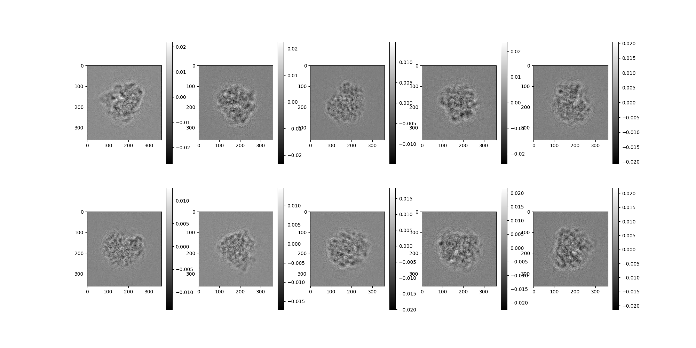
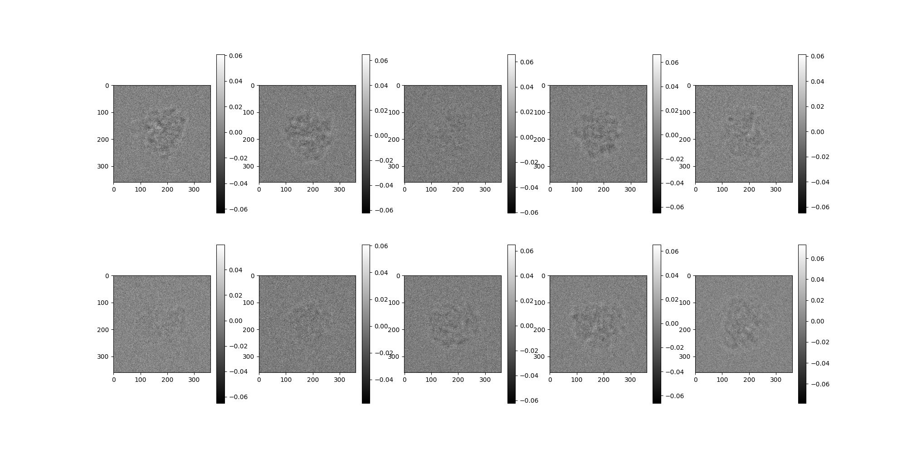
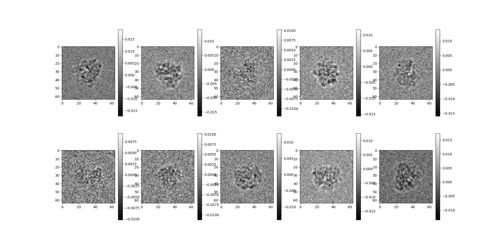
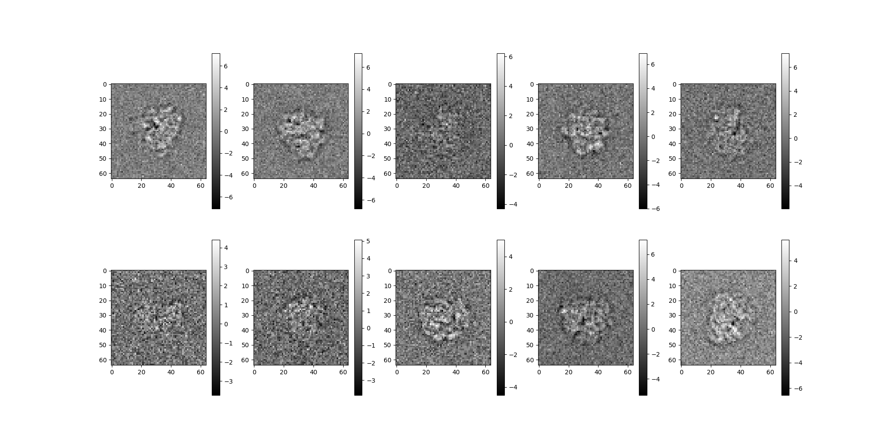
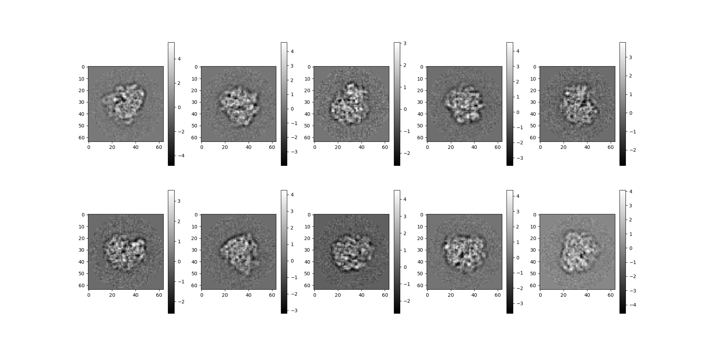
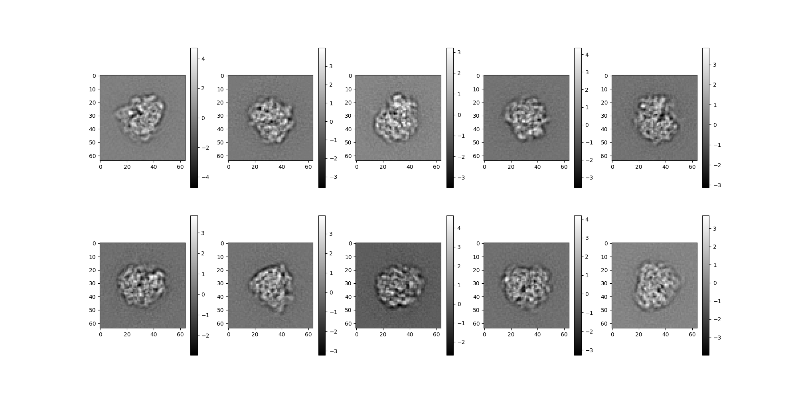
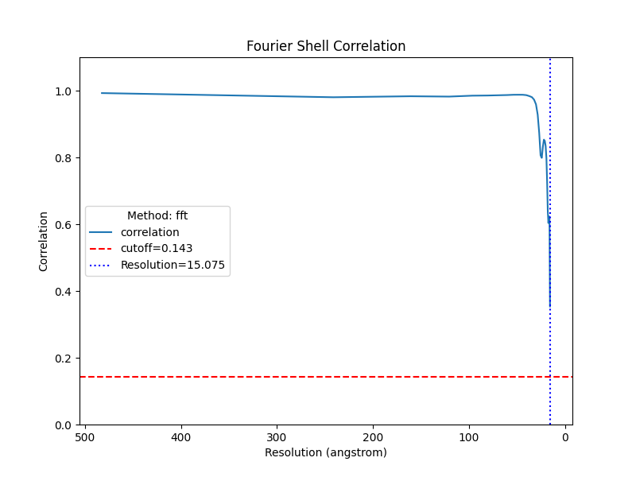

Note
Go to the end to download the full example code.
Ab-initio Pipeline Demonstration¶
This tutorial demonstrates some key components of an ab-initio
reconstruction pipeline using synthetic data generated with ASPIRE’s
Simulation class of objects.
Download an Example Volume¶
We begin by downloading a high resolution volume map of the 80S Ribosome, sourced from EMDB: https://www.ebi.ac.uk/emdb/EMD-2660. This is one of several volume maps that can be downloaded with ASPIRE’s data downloading utility by using the following import.
from aspire.downloader import emdb_2660
# Load 80s Ribosome as a ``Volume`` object.
original_vol = emdb_2660()
# During the preprocessing stages of the pipeline we will downsample
# the images to an image size of 64 pixels. Here, we also downsample the
# volume so we can compare to our reconstruction later.
res = 64
vol_ds = original_vol.downsample(res)
Note
A Volume can be saved using the Volume.save() method as follows:
fn = f"downsampled_80s_ribosome_size{res}.mrc"
vol_ds.save(fn, overwrite=True)
Create a Simulation Source¶
ASPIRE’s Simulation class can be used to generate a synthetic
dataset of projection images. A Simulation object produces
random projections of a supplied Volume and applies noise and CTF
filters. The resulting stack of 2D images is stored in an Image
object.
CTF Filters¶
Let’s start by creating CTF filters. The operators package
contains a collection of filter classes that can be supplied to a
Simulation. We use RadialCTFFilter to generate a set of CTF
filters with various defocus values.
# Create CTF filters
import numpy as np
from aspire.operators import RadialCTFFilter
# Radial CTF Filter
defocus_min = 15000 # unit is angstroms
defocus_max = 25000
defocus_ct = 7
ctf_filters = [
RadialCTFFilter(defocus=d)
for d in np.linspace(defocus_min, defocus_max, defocus_ct)
]
Initialize Simulation Object¶
We feed our Volume and filters into Simulation to generate
the dataset of images. When controlled white Gaussian noise is
desired, WhiteNoiseAdder(var=VAR) can be used to generate a
simulation data set around a specific noise variance.
Alternatively, users can bring their own images using an
ArrayImageSource, or define their own custom noise functions via
Simulation(..., noise_adder=CustomNoiseAdder(...)). Examples
can be found in tutorials/class_averaging.py and
experiments/simulated_abinitio_pipeline.py.
from aspire.noise import WhiteNoiseAdder
from aspire.source import Simulation
# For this ``Simulation`` we set all 2D offset vectors to zero,
# but by default offset vectors will be randomly distributed.
# We cache the Simulation to prevent regenerating the projections
# for each preprocessing stage.
src = Simulation(
n=2500, # number of projections
vols=original_vol, # volume source
offsets=0, # Default: images are randomly shifted
unique_filters=ctf_filters,
noise_adder=WhiteNoiseAdder(var=0.0002), # desired noise variance
).cache()
0%| | 0/5 [00:00<?, ?it/s]
20%|██ | 1/5 [00:34<02:17, 34.44s/it]
40%|████ | 2/5 [01:08<01:43, 34.37s/it]
60%|██████ | 3/5 [01:43<01:08, 34.36s/it]
80%|████████ | 4/5 [02:17<00:34, 34.25s/it]
100%|██████████| 5/5 [02:47<00:00, 32.92s/it]
100%|██████████| 5/5 [02:47<00:00, 33.55s/it]
Note
The noise variance value above was chosen based on other parameters for this quick tutorial, and can be changed to adjust the power of the additive noise. Alternatively, an SNR value can be prescribed as follows:
Simulation(..., noise_adder=WhiteNoiseAdder.from_snr(SNR))
Several Views of the Projection Images¶
We can access several views of the projection images.
# with no corruption applied
src.projections[0:10].show()

# with no noise corruption
src.clean_images[0:10].show()

# with noise and CTF corruption
src.images[0:10].show()

Image Preprocessing¶
We apply some image preprocessing techniques to prepare the the images for denoising via Class Averaging.
Downsampling¶
We downsample the images. Reducing the image size will improve the efficiency of subsequent pipeline stages. Metadata such as pixel size is scaled accordingly to correspond correctly with the image resolution.
src = src.downsample(res)
src.images[:10].show()

CTF Correction¶
We apply phase_flip() to correct for CTF effects.
src = src.phase_flip()
src.images[:10].show()
Normalize Background¶
We apply normalize_background() to prepare the image class averaging.
src = src.normalize_background()
src.images[:10].show()

Noise Whitening¶
We apply whiten() to estimate and whiten the noise.
src = src.whiten()
src.images[:10].show()

0%| | 0/5 [00:00<?, ?it/s]
20%|██ | 1/5 [00:00<00:02, 1.80it/s]
40%|████ | 2/5 [00:01<00:01, 1.67it/s]
60%|██████ | 3/5 [00:01<00:01, 1.65it/s]
80%|████████ | 4/5 [00:02<00:00, 1.67it/s]
100%|██████████| 5/5 [00:02<00:00, 1.75it/s]
100%|██████████| 5/5 [00:02<00:00, 1.72it/s]
Contrast Inversion¶
We apply invert_contrast() to ensure a positive valued signal.
src = src.invert_contrast()
0%| | 0/5 [00:00<?, ?it/s]
20%|██ | 1/5 [00:00<00:02, 1.49it/s]
40%|████ | 2/5 [00:01<00:02, 1.50it/s]
60%|██████ | 3/5 [00:01<00:01, 1.50it/s]
80%|████████ | 4/5 [00:02<00:00, 1.51it/s]
100%|██████████| 5/5 [00:03<00:00, 1.56it/s]
100%|██████████| 5/5 [00:03<00:00, 1.53it/s]
Caching¶
We apply cache to store the results of the ImageSource
pipeline up to this point. This is optional, but can provide
benefit when used intently on machines with adequate memory.
src = src.cache()
0%| | 0/5 [00:00<?, ?it/s]
20%|██ | 1/5 [00:00<00:02, 1.47it/s]
40%|████ | 2/5 [00:01<00:02, 1.46it/s]
60%|██████ | 3/5 [00:02<00:01, 1.48it/s]
80%|████████ | 4/5 [00:02<00:00, 1.47it/s]
100%|██████████| 5/5 [00:03<00:00, 1.54it/s]
100%|██████████| 5/5 [00:03<00:00, 1.51it/s]
Class Averaging¶
For this tutorial we use the DebugClassAvgSource to generate an ImageSource
of class averages. Internally, DebugClassAvgSource uses the RIRClass2D
object to classify the source images via the rotationally invariant representation
(RIR) algorithm and the TopClassSelector object to select the first n_classes
images in the original order from the source. In practice, class selection is commonly
done by sorting class averages based on some configurable notion of quality
(contrast, neighbor distance etc) which can be accomplished by providing a custom
class selector to ClassAverageSource, which changes the ordering of the classes
returned by ClassAverageSource.
from aspire.denoising import DebugClassAvgSource
avgs = DebugClassAvgSource(src=src)
# We'll continue our pipeline using only the first ``n_classes`` from
# ``avgs``. The ``cache()`` call is used here to precompute results
# for the ``:n_classes`` slice. This avoids recomputing the same
# images twice when peeking in the next cell then requesting them in
# the following ``CLSyncVoting`` algorithm. Outside of demonstration
# purposes, where we are repeatedly peeking at various stage results,
# such caching can be dropped allowing for more lazy evaluation.
n_classes = 250
avgs = avgs[:n_classes].cache()
0%| | 0/1 [00:00<?, ?it/s]
0%| | 0/5 [00:00<?, ?it/s]
100%|██████████| 5/5 [00:00<00:00, 294.66it/s]
0%| | 0/5 [00:00<?, ?it/s]
20%|██ | 1/5 [00:00<00:00, 6.24it/s]
40%|████ | 2/5 [00:00<00:00, 6.34it/s]
60%|██████ | 3/5 [00:00<00:00, 6.43it/s]
80%|████████ | 4/5 [00:00<00:00, 6.49it/s]
100%|██████████| 5/5 [00:00<00:00, 6.78it/s]
100%|██████████| 5/5 [00:00<00:00, 6.61it/s]
Rotationally aligning classes: 0%| | 0/250 [00:00<?, ?it/s]
Rotationally aligning classes: 1%| | 3/250 [00:00<00:14, 16.69it/s]
Rotationally aligning classes: 2%|▏ | 5/250 [00:00<00:18, 13.31it/s]
Rotationally aligning classes: 3%|▎ | 7/250 [00:00<00:21, 11.39it/s]
Rotationally aligning classes: 4%|▎ | 9/250 [00:00<00:23, 10.23it/s]
Rotationally aligning classes: 4%|▍ | 11/250 [00:00<00:23, 10.32it/s]
Rotationally aligning classes: 5%|▌ | 13/250 [00:01<00:22, 10.44it/s]
Rotationally aligning classes: 6%|▌ | 15/250 [00:01<00:23, 10.18it/s]
Rotationally aligning classes: 7%|▋ | 17/250 [00:01<00:22, 10.24it/s]
Rotationally aligning classes: 8%|▊ | 19/250 [00:01<00:21, 10.65it/s]
Rotationally aligning classes: 8%|▊ | 21/250 [00:01<00:20, 11.02it/s]
Rotationally aligning classes: 9%|▉ | 23/250 [00:02<00:20, 10.92it/s]
Rotationally aligning classes: 10%|█ | 25/250 [00:02<00:20, 10.88it/s]
Rotationally aligning classes: 11%|█ | 27/250 [00:02<00:20, 11.12it/s]
Rotationally aligning classes: 12%|█▏ | 29/250 [00:02<00:20, 10.81it/s]
Rotationally aligning classes: 12%|█▏ | 31/250 [00:02<00:21, 10.25it/s]
Rotationally aligning classes: 13%|█▎ | 33/250 [00:03<00:20, 10.60it/s]
Rotationally aligning classes: 14%|█▍ | 35/250 [00:03<00:17, 12.04it/s]
Rotationally aligning classes: 15%|█▍ | 37/250 [00:03<00:16, 13.03it/s]
Rotationally aligning classes: 16%|█▌ | 39/250 [00:03<00:15, 13.66it/s]
Rotationally aligning classes: 16%|█▋ | 41/250 [00:03<00:15, 13.10it/s]
Rotationally aligning classes: 17%|█▋ | 43/250 [00:03<00:17, 11.93it/s]
Rotationally aligning classes: 18%|█▊ | 45/250 [00:03<00:16, 12.13it/s]
Rotationally aligning classes: 19%|█▉ | 47/250 [00:04<00:16, 12.66it/s]
Rotationally aligning classes: 20%|█▉ | 49/250 [00:04<00:17, 11.64it/s]
Rotationally aligning classes: 20%|██ | 51/250 [00:04<00:16, 11.83it/s]
Rotationally aligning classes: 21%|██ | 53/250 [00:04<00:16, 12.27it/s]
Rotationally aligning classes: 22%|██▏ | 55/250 [00:04<00:16, 12.05it/s]
Rotationally aligning classes: 23%|██▎ | 57/250 [00:04<00:16, 12.02it/s]
Rotationally aligning classes: 24%|██▎ | 59/250 [00:05<00:16, 11.63it/s]
Rotationally aligning classes: 24%|██▍ | 61/250 [00:05<00:16, 11.62it/s]
Rotationally aligning classes: 25%|██▌ | 63/250 [00:05<00:16, 11.53it/s]
Rotationally aligning classes: 26%|██▌ | 65/250 [00:05<00:16, 11.56it/s]
Rotationally aligning classes: 27%|██▋ | 67/250 [00:05<00:16, 11.42it/s]
Rotationally aligning classes: 28%|██▊ | 69/250 [00:06<00:16, 10.99it/s]
Rotationally aligning classes: 28%|██▊ | 71/250 [00:06<00:16, 10.94it/s]
Rotationally aligning classes: 29%|██▉ | 73/250 [00:06<00:17, 9.97it/s]
Rotationally aligning classes: 30%|███ | 75/250 [00:06<00:16, 10.73it/s]
Rotationally aligning classes: 31%|███ | 77/250 [00:06<00:16, 10.23it/s]
Rotationally aligning classes: 32%|███▏ | 79/250 [00:07<00:16, 10.41it/s]
Rotationally aligning classes: 32%|███▏ | 81/250 [00:07<00:16, 10.00it/s]
Rotationally aligning classes: 33%|███▎ | 83/250 [00:07<00:15, 10.68it/s]
Rotationally aligning classes: 34%|███▍ | 85/250 [00:07<00:16, 10.24it/s]
Rotationally aligning classes: 35%|███▍ | 87/250 [00:07<00:16, 9.77it/s]
Rotationally aligning classes: 35%|███▌ | 88/250 [00:07<00:16, 9.62it/s]
Rotationally aligning classes: 36%|███▌ | 90/250 [00:08<00:16, 9.99it/s]
Rotationally aligning classes: 37%|███▋ | 92/250 [00:08<00:15, 9.88it/s]
Rotationally aligning classes: 37%|███▋ | 93/250 [00:08<00:15, 9.87it/s]
Rotationally aligning classes: 38%|███▊ | 94/250 [00:08<00:16, 9.47it/s]
Rotationally aligning classes: 38%|███▊ | 96/250 [00:08<00:15, 10.07it/s]
Rotationally aligning classes: 39%|███▉ | 98/250 [00:08<00:14, 10.53it/s]
Rotationally aligning classes: 40%|████ | 100/250 [00:09<00:14, 10.68it/s]
Rotationally aligning classes: 41%|████ | 102/250 [00:09<00:14, 9.99it/s]
Rotationally aligning classes: 42%|████▏ | 104/250 [00:09<00:13, 10.54it/s]
Rotationally aligning classes: 42%|████▏ | 106/250 [00:09<00:14, 10.01it/s]
Rotationally aligning classes: 43%|████▎ | 108/250 [00:09<00:15, 9.44it/s]
Rotationally aligning classes: 44%|████▍ | 110/250 [00:10<00:13, 10.76it/s]
Rotationally aligning classes: 45%|████▍ | 112/250 [00:10<00:13, 10.48it/s]
Rotationally aligning classes: 46%|████▌ | 114/250 [00:10<00:12, 10.88it/s]
Rotationally aligning classes: 46%|████▋ | 116/250 [00:10<00:12, 11.13it/s]
Rotationally aligning classes: 47%|████▋ | 118/250 [00:10<00:12, 10.91it/s]
Rotationally aligning classes: 48%|████▊ | 120/250 [00:11<00:12, 10.55it/s]
Rotationally aligning classes: 49%|████▉ | 122/250 [00:11<00:11, 10.73it/s]
Rotationally aligning classes: 50%|████▉ | 124/250 [00:11<00:12, 10.40it/s]
Rotationally aligning classes: 50%|█████ | 126/250 [00:11<00:11, 10.82it/s]
Rotationally aligning classes: 51%|█████ | 128/250 [00:11<00:11, 10.46it/s]
Rotationally aligning classes: 52%|█████▏ | 130/250 [00:11<00:11, 10.24it/s]
Rotationally aligning classes: 53%|█████▎ | 132/250 [00:12<00:10, 10.76it/s]
Rotationally aligning classes: 54%|█████▎ | 134/250 [00:12<00:10, 10.57it/s]
Rotationally aligning classes: 54%|█████▍ | 136/250 [00:12<00:11, 10.36it/s]
Rotationally aligning classes: 55%|█████▌ | 138/250 [00:12<00:10, 10.70it/s]
Rotationally aligning classes: 56%|█████▌ | 140/250 [00:12<00:09, 11.03it/s]
Rotationally aligning classes: 57%|█████▋ | 142/250 [00:13<00:09, 11.60it/s]
Rotationally aligning classes: 58%|█████▊ | 144/250 [00:13<00:10, 10.57it/s]
Rotationally aligning classes: 58%|█████▊ | 146/250 [00:13<00:09, 10.65it/s]
Rotationally aligning classes: 59%|█████▉ | 148/250 [00:13<00:09, 11.26it/s]
Rotationally aligning classes: 60%|██████ | 150/250 [00:13<00:09, 10.58it/s]
Rotationally aligning classes: 61%|██████ | 152/250 [00:14<00:09, 10.34it/s]
Rotationally aligning classes: 62%|██████▏ | 154/250 [00:14<00:09, 10.61it/s]
Rotationally aligning classes: 62%|██████▏ | 156/250 [00:14<00:08, 10.74it/s]
Rotationally aligning classes: 63%|██████▎ | 158/250 [00:14<00:08, 11.01it/s]
Rotationally aligning classes: 64%|██████▍ | 160/250 [00:14<00:07, 11.50it/s]
Rotationally aligning classes: 65%|██████▍ | 162/250 [00:14<00:07, 11.51it/s]
Rotationally aligning classes: 66%|██████▌ | 164/250 [00:15<00:07, 11.32it/s]
Rotationally aligning classes: 66%|██████▋ | 166/250 [00:15<00:07, 11.13it/s]
Rotationally aligning classes: 67%|██████▋ | 168/250 [00:15<00:07, 11.10it/s]
Rotationally aligning classes: 68%|██████▊ | 170/250 [00:15<00:07, 11.13it/s]
Rotationally aligning classes: 69%|██████▉ | 172/250 [00:15<00:07, 10.82it/s]
Rotationally aligning classes: 70%|██████▉ | 174/250 [00:15<00:06, 11.44it/s]
Rotationally aligning classes: 70%|███████ | 176/250 [00:16<00:07, 10.15it/s]
Rotationally aligning classes: 71%|███████ | 178/250 [00:16<00:06, 10.32it/s]
Rotationally aligning classes: 72%|███████▏ | 180/250 [00:16<00:06, 10.71it/s]
Rotationally aligning classes: 73%|███████▎ | 182/250 [00:16<00:06, 10.66it/s]
Rotationally aligning classes: 74%|███████▎ | 184/250 [00:16<00:05, 11.23it/s]
Rotationally aligning classes: 74%|███████▍ | 186/250 [00:17<00:05, 11.65it/s]
Rotationally aligning classes: 75%|███████▌ | 188/250 [00:17<00:05, 12.02it/s]
Rotationally aligning classes: 76%|███████▌ | 190/250 [00:17<00:05, 10.96it/s]
Rotationally aligning classes: 77%|███████▋ | 192/250 [00:17<00:05, 11.52it/s]
Rotationally aligning classes: 78%|███████▊ | 194/250 [00:17<00:04, 11.31it/s]
Rotationally aligning classes: 78%|███████▊ | 196/250 [00:17<00:04, 11.05it/s]
Rotationally aligning classes: 79%|███████▉ | 198/250 [00:18<00:04, 11.03it/s]
Rotationally aligning classes: 80%|████████ | 200/250 [00:18<00:04, 10.88it/s]
Rotationally aligning classes: 81%|████████ | 202/250 [00:18<00:04, 11.55it/s]
Rotationally aligning classes: 82%|████████▏ | 204/250 [00:18<00:04, 11.13it/s]
Rotationally aligning classes: 82%|████████▏ | 206/250 [00:18<00:03, 11.39it/s]
Rotationally aligning classes: 83%|████████▎ | 208/250 [00:19<00:03, 11.50it/s]
Rotationally aligning classes: 84%|████████▍ | 210/250 [00:19<00:03, 11.38it/s]
Rotationally aligning classes: 85%|████████▍ | 212/250 [00:19<00:03, 11.39it/s]
Rotationally aligning classes: 86%|████████▌ | 214/250 [00:19<00:03, 11.09it/s]
Rotationally aligning classes: 86%|████████▋ | 216/250 [00:19<00:03, 10.94it/s]
Rotationally aligning classes: 87%|████████▋ | 218/250 [00:19<00:03, 9.93it/s]
Rotationally aligning classes: 88%|████████▊ | 220/250 [00:20<00:02, 10.26it/s]
Rotationally aligning classes: 89%|████████▉ | 222/250 [00:20<00:02, 10.16it/s]
Rotationally aligning classes: 90%|████████▉ | 224/250 [00:20<00:02, 9.97it/s]
Rotationally aligning classes: 90%|█████████ | 226/250 [00:20<00:02, 9.87it/s]
Rotationally aligning classes: 91%|█████████ | 228/250 [00:20<00:02, 10.43it/s]
Rotationally aligning classes: 92%|█████████▏| 230/250 [00:21<00:01, 11.22it/s]
Rotationally aligning classes: 93%|█████████▎| 232/250 [00:21<00:01, 10.86it/s]
Rotationally aligning classes: 94%|█████████▎| 234/250 [00:21<00:01, 10.74it/s]
Rotationally aligning classes: 94%|█████████▍| 236/250 [00:21<00:01, 10.48it/s]
Rotationally aligning classes: 95%|█████████▌| 238/250 [00:21<00:01, 10.62it/s]
Rotationally aligning classes: 96%|█████████▌| 240/250 [00:22<00:00, 11.28it/s]
Rotationally aligning classes: 97%|█████████▋| 242/250 [00:22<00:00, 11.43it/s]
Rotationally aligning classes: 98%|█████████▊| 244/250 [00:22<00:00, 11.25it/s]
Rotationally aligning classes: 98%|█████████▊| 246/250 [00:22<00:00, 10.24it/s]
Rotationally aligning classes: 99%|█████████▉| 248/250 [00:22<00:00, 9.74it/s]
Rotationally aligning classes: 100%|█████████▉| 249/250 [00:22<00:00, 9.77it/s]
Rotationally aligning classes: 100%|██████████| 250/250 [00:23<00:00, 9.43it/s]
Stacking and evaluating batch of class averages from FFBBasis2D to Cartesian: 0%| | 0/1 [00:00<?, ?it/s]
Stacking batch: 0%| | 0/250 [00:00<?, ?it/s]
Stacking batch: 1%| | 2/250 [00:00<00:14, 17.47it/s]
Stacking batch: 5%|▌ | 13/250 [00:00<00:03, 68.72it/s]
Stacking batch: 10%|█ | 25/250 [00:00<00:02, 88.42it/s]
Stacking batch: 14%|█▍ | 36/250 [00:00<00:02, 96.19it/s]
Stacking batch: 19%|█▉ | 48/250 [00:00<00:01, 101.50it/s]
Stacking batch: 24%|██▍ | 60/250 [00:00<00:01, 105.51it/s]
Stacking batch: 29%|██▉ | 72/250 [00:00<00:01, 107.41it/s]
Stacking batch: 34%|███▎ | 84/250 [00:00<00:01, 108.94it/s]
Stacking batch: 38%|███▊ | 96/250 [00:00<00:01, 110.14it/s]
Stacking batch: 43%|████▎ | 108/250 [00:01<00:01, 110.81it/s]
Stacking batch: 48%|████▊ | 120/250 [00:01<00:01, 110.67it/s]
Stacking batch: 53%|█████▎ | 132/250 [00:01<00:01, 111.37it/s]
Stacking batch: 58%|█████▊ | 144/250 [00:01<00:00, 111.97it/s]
Stacking batch: 62%|██████▏ | 156/250 [00:01<00:00, 112.93it/s]
Stacking batch: 67%|██████▋ | 168/250 [00:01<00:00, 113.61it/s]
Stacking batch: 72%|███████▏ | 180/250 [00:01<00:00, 113.52it/s]
Stacking batch: 77%|███████▋ | 192/250 [00:01<00:00, 113.70it/s]
Stacking batch: 82%|████████▏ | 204/250 [00:01<00:00, 113.72it/s]
Stacking batch: 86%|████████▋ | 216/250 [00:02<00:00, 113.91it/s]
Stacking batch: 91%|█████████ | 228/250 [00:02<00:00, 114.02it/s]
Stacking batch: 96%|█████████▌| 240/250 [00:02<00:00, 113.46it/s]
Stacking and evaluating batch of class averages from FFBBasis2D to Cartesian: 100%|██████████| 1/1 [00:02<00:00, 2.50s/it]
100%|██████████| 1/1 [00:36<00:00, 36.07s/it]
100%|██████████| 1/1 [00:36<00:00, 36.07s/it]
View the Class Averages¶
# Show class averages
avgs.images[0:10].show()

# Show original images corresponding to those classes. This 1:1
# comparison is only expected to work because we used
# ``TopClassSelector`` to classify our images.
src.images[0:10].show()
Orientation Estimation¶
We create an OrientedSource, which consumes an ImageSource object, an
orientation estimator, and returns a new source which lazily estimates orientations.
In this case we supply avgs for our source and a CLSyncVoting
class instance for our orientation estimator. The CLSyncVoting algorithm employs
a common-lines method with synchronization and voting.
from aspire.abinitio import CLSyncVoting
from aspire.source import OrientedSource
from aspire.utils import Rotation
# Stash true rotations for later comparison
true_rotations = Rotation(src.rotations[:n_classes])
# Instantiate a ``CLSyncVoting`` object for estimating orientations.
orient_est = CLSyncVoting(avgs)
# Instantiate an ``OrientedSource``.
oriented_src = OrientedSource(avgs, orient_est)
# Estimate Rotations.
est_rotations = oriented_src.rotations
Searching over common line pairs: 0%| | 0/31125 [00:00<?, ?it/s]
Searching over common line pairs: 0%| | 36/31125 [00:00<01:27, 356.73it/s]
Searching over common line pairs: 0%| | 73/31125 [00:00<01:26, 359.97it/s]
Searching over common line pairs: 0%| | 110/31125 [00:00<01:25, 362.05it/s]
Searching over common line pairs: 0%| | 147/31125 [00:00<01:25, 362.71it/s]
Searching over common line pairs: 1%| | 184/31125 [00:00<01:25, 362.88it/s]
Searching over common line pairs: 1%| | 221/31125 [00:00<01:25, 363.27it/s]
Searching over common line pairs: 1%| | 258/31125 [00:00<01:25, 362.60it/s]
Searching over common line pairs: 1%| | 295/31125 [00:00<01:24, 363.04it/s]
Searching over common line pairs: 1%| | 332/31125 [00:00<01:24, 363.72it/s]
Searching over common line pairs: 1%| | 369/31125 [00:01<01:24, 363.69it/s]
Searching over common line pairs: 1%|▏ | 406/31125 [00:01<01:24, 363.59it/s]
Searching over common line pairs: 1%|▏ | 443/31125 [00:01<01:24, 363.89it/s]
Searching over common line pairs: 2%|▏ | 480/31125 [00:01<01:24, 363.88it/s]
Searching over common line pairs: 2%|▏ | 517/31125 [00:01<01:24, 363.58it/s]
Searching over common line pairs: 2%|▏ | 554/31125 [00:01<01:24, 363.56it/s]
Searching over common line pairs: 2%|▏ | 591/31125 [00:01<01:23, 363.77it/s]
Searching over common line pairs: 2%|▏ | 628/31125 [00:01<01:23, 363.50it/s]
Searching over common line pairs: 2%|▏ | 665/31125 [00:01<01:23, 363.43it/s]
Searching over common line pairs: 2%|▏ | 702/31125 [00:01<01:23, 363.53it/s]
Searching over common line pairs: 2%|▏ | 739/31125 [00:02<01:23, 363.56it/s]
Searching over common line pairs: 2%|▏ | 776/31125 [00:02<01:23, 363.40it/s]
Searching over common line pairs: 3%|▎ | 813/31125 [00:02<01:23, 363.76it/s]
Searching over common line pairs: 3%|▎ | 850/31125 [00:02<01:23, 363.87it/s]
Searching over common line pairs: 3%|▎ | 887/31125 [00:02<01:23, 364.08it/s]
Searching over common line pairs: 3%|▎ | 924/31125 [00:02<01:22, 364.07it/s]
Searching over common line pairs: 3%|▎ | 961/31125 [00:02<01:22, 364.07it/s]
Searching over common line pairs: 3%|▎ | 998/31125 [00:02<01:22, 363.51it/s]
Searching over common line pairs: 3%|▎ | 1035/31125 [00:02<01:22, 363.31it/s]
Searching over common line pairs: 3%|▎ | 1072/31125 [00:02<01:22, 363.27it/s]
Searching over common line pairs: 4%|▎ | 1109/31125 [00:03<01:22, 363.09it/s]
Searching over common line pairs: 4%|▎ | 1146/31125 [00:03<01:22, 363.03it/s]
Searching over common line pairs: 4%|▍ | 1183/31125 [00:03<01:22, 363.20it/s]
Searching over common line pairs: 4%|▍ | 1220/31125 [00:03<01:22, 363.38it/s]
Searching over common line pairs: 4%|▍ | 1257/31125 [00:03<01:22, 363.28it/s]
Searching over common line pairs: 4%|▍ | 1294/31125 [00:03<01:22, 363.38it/s]
Searching over common line pairs: 4%|▍ | 1331/31125 [00:03<01:21, 363.71it/s]
Searching over common line pairs: 4%|▍ | 1368/31125 [00:03<01:21, 363.40it/s]
Searching over common line pairs: 5%|▍ | 1405/31125 [00:03<01:21, 363.41it/s]
Searching over common line pairs: 5%|▍ | 1442/31125 [00:03<01:21, 363.46it/s]
Searching over common line pairs: 5%|▍ | 1479/31125 [00:04<01:21, 363.13it/s]
Searching over common line pairs: 5%|▍ | 1516/31125 [00:04<01:21, 363.07it/s]
Searching over common line pairs: 5%|▍ | 1553/31125 [00:04<01:21, 363.36it/s]
Searching over common line pairs: 5%|▌ | 1590/31125 [00:04<01:21, 363.40it/s]
Searching over common line pairs: 5%|▌ | 1627/31125 [00:04<01:21, 363.54it/s]
Searching over common line pairs: 5%|▌ | 1664/31125 [00:04<01:20, 363.93it/s]
Searching over common line pairs: 5%|▌ | 1701/31125 [00:04<01:20, 364.31it/s]
Searching over common line pairs: 6%|▌ | 1738/31125 [00:04<01:20, 364.27it/s]
Searching over common line pairs: 6%|▌ | 1775/31125 [00:04<01:20, 364.24it/s]
Searching over common line pairs: 6%|▌ | 1812/31125 [00:04<01:20, 364.10it/s]
Searching over common line pairs: 6%|▌ | 1849/31125 [00:05<01:20, 363.93it/s]
Searching over common line pairs: 6%|▌ | 1886/31125 [00:05<01:20, 363.75it/s]
Searching over common line pairs: 6%|▌ | 1923/31125 [00:05<01:20, 363.96it/s]
Searching over common line pairs: 6%|▋ | 1960/31125 [00:05<01:20, 364.08it/s]
Searching over common line pairs: 6%|▋ | 1997/31125 [00:05<01:20, 363.63it/s]
Searching over common line pairs: 7%|▋ | 2034/31125 [00:05<01:20, 362.91it/s]
Searching over common line pairs: 7%|▋ | 2071/31125 [00:05<01:20, 363.09it/s]
Searching over common line pairs: 7%|▋ | 2108/31125 [00:05<01:19, 363.41it/s]
Searching over common line pairs: 7%|▋ | 2145/31125 [00:05<01:19, 363.87it/s]
Searching over common line pairs: 7%|▋ | 2182/31125 [00:06<01:19, 364.19it/s]
Searching over common line pairs: 7%|▋ | 2219/31125 [00:06<01:19, 364.17it/s]
Searching over common line pairs: 7%|▋ | 2256/31125 [00:06<01:19, 364.18it/s]
Searching over common line pairs: 7%|▋ | 2293/31125 [00:06<01:19, 364.44it/s]
Searching over common line pairs: 7%|▋ | 2330/31125 [00:06<01:18, 364.58it/s]
Searching over common line pairs: 8%|▊ | 2367/31125 [00:06<01:18, 364.32it/s]
Searching over common line pairs: 8%|▊ | 2404/31125 [00:06<01:18, 364.24it/s]
Searching over common line pairs: 8%|▊ | 2441/31125 [00:06<01:18, 364.09it/s]
Searching over common line pairs: 8%|▊ | 2478/31125 [00:06<01:18, 363.92it/s]
Searching over common line pairs: 8%|▊ | 2515/31125 [00:06<01:18, 364.04it/s]
Searching over common line pairs: 8%|▊ | 2552/31125 [00:07<01:18, 364.00it/s]
Searching over common line pairs: 8%|▊ | 2589/31125 [00:07<01:18, 363.89it/s]
Searching over common line pairs: 8%|▊ | 2626/31125 [00:07<01:18, 363.78it/s]
Searching over common line pairs: 9%|▊ | 2663/31125 [00:07<01:18, 364.26it/s]
Searching over common line pairs: 9%|▊ | 2700/31125 [00:07<01:18, 364.34it/s]
Searching over common line pairs: 9%|▉ | 2737/31125 [00:07<01:18, 363.72it/s]
Searching over common line pairs: 9%|▉ | 2774/31125 [00:07<01:17, 363.86it/s]
Searching over common line pairs: 9%|▉ | 2811/31125 [00:07<01:17, 363.46it/s]
Searching over common line pairs: 9%|▉ | 2848/31125 [00:07<01:17, 363.28it/s]
Searching over common line pairs: 9%|▉ | 2885/31125 [00:07<01:17, 363.33it/s]
Searching over common line pairs: 9%|▉ | 2922/31125 [00:08<01:17, 363.57it/s]
Searching over common line pairs: 10%|▉ | 2959/31125 [00:08<01:17, 363.74it/s]
Searching over common line pairs: 10%|▉ | 2996/31125 [00:08<01:17, 364.12it/s]
Searching over common line pairs: 10%|▉ | 3033/31125 [00:08<01:17, 364.15it/s]
Searching over common line pairs: 10%|▉ | 3070/31125 [00:08<01:17, 363.25it/s]
Searching over common line pairs: 10%|▉ | 3107/31125 [00:08<01:17, 363.45it/s]
Searching over common line pairs: 10%|█ | 3144/31125 [00:08<01:16, 363.77it/s]
Searching over common line pairs: 10%|█ | 3181/31125 [00:08<01:16, 363.49it/s]
Searching over common line pairs: 10%|█ | 3218/31125 [00:08<01:16, 363.28it/s]
Searching over common line pairs: 10%|█ | 3255/31125 [00:08<01:16, 363.00it/s]
Searching over common line pairs: 11%|█ | 3292/31125 [00:09<01:16, 363.11it/s]
Searching over common line pairs: 11%|█ | 3329/31125 [00:09<01:16, 363.29it/s]
Searching over common line pairs: 11%|█ | 3366/31125 [00:09<01:16, 363.99it/s]
Searching over common line pairs: 11%|█ | 3403/31125 [00:09<01:16, 364.00it/s]
Searching over common line pairs: 11%|█ | 3440/31125 [00:09<01:16, 364.04it/s]
Searching over common line pairs: 11%|█ | 3477/31125 [00:09<01:15, 364.30it/s]
Searching over common line pairs: 11%|█▏ | 3514/31125 [00:09<01:15, 364.46it/s]
Searching over common line pairs: 11%|█▏ | 3551/31125 [00:09<01:15, 364.03it/s]
Searching over common line pairs: 12%|█▏ | 3588/31125 [00:09<01:15, 364.09it/s]
Searching over common line pairs: 12%|█▏ | 3625/31125 [00:09<01:15, 363.92it/s]
Searching over common line pairs: 12%|█▏ | 3662/31125 [00:10<01:15, 364.12it/s]
Searching over common line pairs: 12%|█▏ | 3699/31125 [00:10<01:15, 364.22it/s]
Searching over common line pairs: 12%|█▏ | 3736/31125 [00:10<01:15, 364.24it/s]
Searching over common line pairs: 12%|█▏ | 3773/31125 [00:10<01:15, 364.26it/s]
Searching over common line pairs: 12%|█▏ | 3810/31125 [00:10<01:15, 364.13it/s]
Searching over common line pairs: 12%|█▏ | 3847/31125 [00:10<01:14, 363.92it/s]
Searching over common line pairs: 12%|█▏ | 3884/31125 [00:10<01:14, 363.55it/s]
Searching over common line pairs: 13%|█▎ | 3921/31125 [00:10<01:14, 363.67it/s]
Searching over common line pairs: 13%|█▎ | 3958/31125 [00:10<01:14, 363.65it/s]
Searching over common line pairs: 13%|█▎ | 3995/31125 [00:10<01:14, 363.93it/s]
Searching over common line pairs: 13%|█▎ | 4032/31125 [00:11<01:14, 364.12it/s]
Searching over common line pairs: 13%|█▎ | 4069/31125 [00:11<01:14, 363.83it/s]
Searching over common line pairs: 13%|█▎ | 4106/31125 [00:11<01:14, 363.99it/s]
Searching over common line pairs: 13%|█▎ | 4143/31125 [00:11<01:14, 363.96it/s]
Searching over common line pairs: 13%|█▎ | 4180/31125 [00:11<01:14, 363.72it/s]
Searching over common line pairs: 14%|█▎ | 4217/31125 [00:11<01:14, 363.61it/s]
Searching over common line pairs: 14%|█▎ | 4254/31125 [00:11<01:13, 363.76it/s]
Searching over common line pairs: 14%|█▍ | 4291/31125 [00:11<01:13, 363.81it/s]
Searching over common line pairs: 14%|█▍ | 4328/31125 [00:11<01:13, 363.69it/s]
Searching over common line pairs: 14%|█▍ | 4365/31125 [00:12<01:13, 363.53it/s]
Searching over common line pairs: 14%|█▍ | 4402/31125 [00:12<01:13, 363.62it/s]
Searching over common line pairs: 14%|█▍ | 4439/31125 [00:12<01:13, 363.66it/s]
Searching over common line pairs: 14%|█▍ | 4476/31125 [00:12<01:13, 363.71it/s]
Searching over common line pairs: 14%|█▍ | 4513/31125 [00:12<01:13, 363.63it/s]
Searching over common line pairs: 15%|█▍ | 4550/31125 [00:12<01:13, 363.55it/s]
Searching over common line pairs: 15%|█▍ | 4587/31125 [00:12<01:13, 363.51it/s]
Searching over common line pairs: 15%|█▍ | 4624/31125 [00:12<01:12, 363.54it/s]
Searching over common line pairs: 15%|█▍ | 4661/31125 [00:12<01:12, 363.93it/s]
Searching over common line pairs: 15%|█▌ | 4698/31125 [00:12<01:12, 363.80it/s]
Searching over common line pairs: 15%|█▌ | 4735/31125 [00:13<01:12, 363.92it/s]
Searching over common line pairs: 15%|█▌ | 4772/31125 [00:13<01:12, 363.98it/s]
Searching over common line pairs: 15%|█▌ | 4809/31125 [00:13<01:12, 363.73it/s]
Searching over common line pairs: 16%|█▌ | 4846/31125 [00:13<01:12, 363.62it/s]
Searching over common line pairs: 16%|█▌ | 4883/31125 [00:13<01:12, 363.95it/s]
Searching over common line pairs: 16%|█▌ | 4920/31125 [00:13<01:12, 363.91it/s]
Searching over common line pairs: 16%|█▌ | 4957/31125 [00:13<01:11, 363.92it/s]
Searching over common line pairs: 16%|█▌ | 4994/31125 [00:13<01:11, 364.03it/s]
Searching over common line pairs: 16%|█▌ | 5031/31125 [00:13<01:11, 363.61it/s]
Searching over common line pairs: 16%|█▋ | 5068/31125 [00:13<01:11, 363.53it/s]
Searching over common line pairs: 16%|█▋ | 5105/31125 [00:14<01:11, 363.74it/s]
Searching over common line pairs: 17%|█▋ | 5142/31125 [00:14<01:11, 363.62it/s]
Searching over common line pairs: 17%|█▋ | 5179/31125 [00:14<01:11, 363.45it/s]
Searching over common line pairs: 17%|█▋ | 5216/31125 [00:14<01:11, 363.57it/s]
Searching over common line pairs: 17%|█▋ | 5253/31125 [00:14<01:11, 363.29it/s]
Searching over common line pairs: 17%|█▋ | 5290/31125 [00:14<01:11, 363.32it/s]
Searching over common line pairs: 17%|█▋ | 5327/31125 [00:14<01:11, 363.28it/s]
Searching over common line pairs: 17%|█▋ | 5364/31125 [00:14<01:10, 363.23it/s]
Searching over common line pairs: 17%|█▋ | 5401/31125 [00:14<01:10, 363.17it/s]
Searching over common line pairs: 17%|█▋ | 5438/31125 [00:14<01:10, 362.79it/s]
Searching over common line pairs: 18%|█▊ | 5475/31125 [00:15<01:10, 362.95it/s]
Searching over common line pairs: 18%|█▊ | 5512/31125 [00:15<01:10, 362.81it/s]
Searching over common line pairs: 18%|█▊ | 5549/31125 [00:15<01:10, 363.32it/s]
Searching over common line pairs: 18%|█▊ | 5586/31125 [00:15<01:10, 363.46it/s]
Searching over common line pairs: 18%|█▊ | 5623/31125 [00:15<01:10, 363.59it/s]
Searching over common line pairs: 18%|█▊ | 5660/31125 [00:15<01:10, 363.53it/s]
Searching over common line pairs: 18%|█▊ | 5697/31125 [00:15<01:09, 363.72it/s]
Searching over common line pairs: 18%|█▊ | 5734/31125 [00:15<01:09, 363.69it/s]
Searching over common line pairs: 19%|█▊ | 5771/31125 [00:15<01:09, 363.66it/s]
Searching over common line pairs: 19%|█▊ | 5808/31125 [00:15<01:09, 363.89it/s]
Searching over common line pairs: 19%|█▉ | 5845/31125 [00:16<01:09, 364.10it/s]
Searching over common line pairs: 19%|█▉ | 5882/31125 [00:16<01:09, 364.11it/s]
Searching over common line pairs: 19%|█▉ | 5919/31125 [00:16<01:09, 364.32it/s]
Searching over common line pairs: 19%|█▉ | 5956/31125 [00:16<01:09, 364.10it/s]
Searching over common line pairs: 19%|█▉ | 5993/31125 [00:16<01:09, 364.15it/s]
Searching over common line pairs: 19%|█▉ | 6030/31125 [00:16<01:08, 364.36it/s]
Searching over common line pairs: 19%|█▉ | 6067/31125 [00:16<01:08, 364.25it/s]
Searching over common line pairs: 20%|█▉ | 6104/31125 [00:16<01:08, 364.26it/s]
Searching over common line pairs: 20%|█▉ | 6141/31125 [00:16<01:08, 364.28it/s]
Searching over common line pairs: 20%|█▉ | 6178/31125 [00:16<01:08, 364.00it/s]
Searching over common line pairs: 20%|█▉ | 6215/31125 [00:17<01:08, 364.17it/s]
Searching over common line pairs: 20%|██ | 6252/31125 [00:17<01:08, 363.97it/s]
Searching over common line pairs: 20%|██ | 6289/31125 [00:17<01:08, 363.97it/s]
Searching over common line pairs: 20%|██ | 6326/31125 [00:17<01:08, 363.72it/s]
Searching over common line pairs: 20%|██ | 6363/31125 [00:17<01:08, 363.78it/s]
Searching over common line pairs: 21%|██ | 6400/31125 [00:17<01:07, 363.61it/s]
Searching over common line pairs: 21%|██ | 6437/31125 [00:17<01:07, 363.62it/s]
Searching over common line pairs: 21%|██ | 6474/31125 [00:17<01:07, 363.84it/s]
Searching over common line pairs: 21%|██ | 6511/31125 [00:17<01:07, 363.82it/s]
Searching over common line pairs: 21%|██ | 6548/31125 [00:18<01:07, 363.88it/s]
Searching over common line pairs: 21%|██ | 6585/31125 [00:18<01:07, 363.64it/s]
Searching over common line pairs: 21%|██▏ | 6622/31125 [00:18<01:07, 363.43it/s]
Searching over common line pairs: 21%|██▏ | 6659/31125 [00:18<01:07, 363.84it/s]
Searching over common line pairs: 22%|██▏ | 6696/31125 [00:18<01:07, 363.88it/s]
Searching over common line pairs: 22%|██▏ | 6733/31125 [00:18<01:06, 364.17it/s]
Searching over common line pairs: 22%|██▏ | 6770/31125 [00:18<01:06, 364.46it/s]
Searching over common line pairs: 22%|██▏ | 6807/31125 [00:18<01:06, 364.41it/s]
Searching over common line pairs: 22%|██▏ | 6844/31125 [00:18<01:06, 364.21it/s]
Searching over common line pairs: 22%|██▏ | 6881/31125 [00:18<01:06, 364.19it/s]
Searching over common line pairs: 22%|██▏ | 6918/31125 [00:19<01:06, 363.96it/s]
Searching over common line pairs: 22%|██▏ | 6955/31125 [00:19<01:06, 363.75it/s]
Searching over common line pairs: 22%|██▏ | 6992/31125 [00:19<01:06, 363.48it/s]
Searching over common line pairs: 23%|██▎ | 7029/31125 [00:19<01:06, 363.35it/s]
Searching over common line pairs: 23%|██▎ | 7066/31125 [00:19<01:06, 363.21it/s]
Searching over common line pairs: 23%|██▎ | 7103/31125 [00:19<01:06, 363.32it/s]
Searching over common line pairs: 23%|██▎ | 7140/31125 [00:19<01:05, 363.73it/s]
Searching over common line pairs: 23%|██▎ | 7177/31125 [00:19<01:05, 363.76it/s]
Searching over common line pairs: 23%|██▎ | 7214/31125 [00:19<01:05, 364.02it/s]
Searching over common line pairs: 23%|██▎ | 7251/31125 [00:19<01:05, 364.05it/s]
Searching over common line pairs: 23%|██▎ | 7288/31125 [00:20<01:05, 364.10it/s]
Searching over common line pairs: 24%|██▎ | 7325/31125 [00:20<01:05, 364.31it/s]
Searching over common line pairs: 24%|██▎ | 7362/31125 [00:20<01:05, 364.26it/s]
Searching over common line pairs: 24%|██▍ | 7399/31125 [00:20<01:05, 364.30it/s]
Searching over common line pairs: 24%|██▍ | 7436/31125 [00:20<01:05, 364.41it/s]
Searching over common line pairs: 24%|██▍ | 7473/31125 [00:20<01:04, 364.07it/s]
Searching over common line pairs: 24%|██▍ | 7510/31125 [00:20<01:05, 359.55it/s]
Searching over common line pairs: 24%|██▍ | 7547/31125 [00:20<01:05, 360.62it/s]
Searching over common line pairs: 24%|██▍ | 7584/31125 [00:20<01:05, 361.77it/s]
Searching over common line pairs: 24%|██▍ | 7621/31125 [00:20<01:04, 362.28it/s]
Searching over common line pairs: 25%|██▍ | 7658/31125 [00:21<01:04, 362.46it/s]
Searching over common line pairs: 25%|██▍ | 7695/31125 [00:21<01:04, 362.66it/s]
Searching over common line pairs: 25%|██▍ | 7732/31125 [00:21<01:04, 362.86it/s]
Searching over common line pairs: 25%|██▍ | 7769/31125 [00:21<01:04, 363.10it/s]
Searching over common line pairs: 25%|██▌ | 7806/31125 [00:21<01:04, 362.93it/s]
Searching over common line pairs: 25%|██▌ | 7843/31125 [00:21<01:04, 363.46it/s]
Searching over common line pairs: 25%|██▌ | 7880/31125 [00:21<01:03, 363.32it/s]
Searching over common line pairs: 25%|██▌ | 7917/31125 [00:21<01:03, 363.19it/s]
Searching over common line pairs: 26%|██▌ | 7954/31125 [00:21<01:03, 363.63it/s]
Searching over common line pairs: 26%|██▌ | 7991/31125 [00:21<01:03, 363.83it/s]
Searching over common line pairs: 26%|██▌ | 8028/31125 [00:22<01:03, 364.00it/s]
Searching over common line pairs: 26%|██▌ | 8065/31125 [00:22<01:03, 364.24it/s]
Searching over common line pairs: 26%|██▌ | 8102/31125 [00:22<01:03, 364.23it/s]
Searching over common line pairs: 26%|██▌ | 8139/31125 [00:22<01:03, 364.10it/s]
Searching over common line pairs: 26%|██▋ | 8176/31125 [00:22<01:03, 363.93it/s]
Searching over common line pairs: 26%|██▋ | 8213/31125 [00:22<01:02, 363.71it/s]
Searching over common line pairs: 27%|██▋ | 8250/31125 [00:22<01:02, 364.03it/s]
Searching over common line pairs: 27%|██▋ | 8287/31125 [00:22<01:02, 364.06it/s]
Searching over common line pairs: 27%|██▋ | 8324/31125 [00:22<01:02, 364.03it/s]
Searching over common line pairs: 27%|██▋ | 8361/31125 [00:22<01:02, 363.38it/s]
Searching over common line pairs: 27%|██▋ | 8398/31125 [00:23<01:02, 363.19it/s]
Searching over common line pairs: 27%|██▋ | 8435/31125 [00:23<01:02, 363.08it/s]
Searching over common line pairs: 27%|██▋ | 8472/31125 [00:23<01:02, 363.00it/s]
Searching over common line pairs: 27%|██▋ | 8509/31125 [00:23<01:02, 363.31it/s]
Searching over common line pairs: 27%|██▋ | 8546/31125 [00:23<01:02, 363.25it/s]
Searching over common line pairs: 28%|██▊ | 8583/31125 [00:23<01:02, 363.55it/s]
Searching over common line pairs: 28%|██▊ | 8620/31125 [00:23<01:01, 364.09it/s]
Searching over common line pairs: 28%|██▊ | 8657/31125 [00:23<01:01, 364.55it/s]
Searching over common line pairs: 28%|██▊ | 8694/31125 [00:23<01:01, 364.59it/s]
Searching over common line pairs: 28%|██▊ | 8731/31125 [00:24<01:01, 364.45it/s]
Searching over common line pairs: 28%|██▊ | 8768/31125 [00:24<01:01, 364.21it/s]
Searching over common line pairs: 28%|██▊ | 8805/31125 [00:24<01:01, 364.16it/s]
Searching over common line pairs: 28%|██▊ | 8842/31125 [00:24<01:01, 363.99it/s]
Searching over common line pairs: 29%|██▊ | 8879/31125 [00:24<01:01, 364.02it/s]
Searching over common line pairs: 29%|██▊ | 8916/31125 [00:24<01:00, 364.13it/s]
Searching over common line pairs: 29%|██▉ | 8953/31125 [00:24<01:00, 364.27it/s]
Searching over common line pairs: 29%|██▉ | 8990/31125 [00:24<01:00, 363.83it/s]
Searching over common line pairs: 29%|██▉ | 9027/31125 [00:24<01:00, 364.00it/s]
Searching over common line pairs: 29%|██▉ | 9064/31125 [00:24<01:00, 363.70it/s]
Searching over common line pairs: 29%|██▉ | 9101/31125 [00:25<01:00, 363.61it/s]
Searching over common line pairs: 29%|██▉ | 9138/31125 [00:25<01:00, 363.89it/s]
Searching over common line pairs: 29%|██▉ | 9175/31125 [00:25<01:00, 363.76it/s]
Searching over common line pairs: 30%|██▉ | 9212/31125 [00:25<01:00, 363.54it/s]
Searching over common line pairs: 30%|██▉ | 9249/31125 [00:25<01:00, 363.62it/s]
Searching over common line pairs: 30%|██▉ | 9286/31125 [00:25<01:00, 363.63it/s]
Searching over common line pairs: 30%|██▉ | 9323/31125 [00:25<00:59, 363.67it/s]
Searching over common line pairs: 30%|███ | 9360/31125 [00:25<00:59, 364.03it/s]
Searching over common line pairs: 30%|███ | 9397/31125 [00:25<00:59, 363.93it/s]
Searching over common line pairs: 30%|███ | 9434/31125 [00:25<00:59, 363.29it/s]
Searching over common line pairs: 30%|███ | 9471/31125 [00:26<00:59, 363.41it/s]
Searching over common line pairs: 31%|███ | 9508/31125 [00:26<00:59, 363.60it/s]
Searching over common line pairs: 31%|███ | 9545/31125 [00:26<00:59, 363.57it/s]
Searching over common line pairs: 31%|███ | 9582/31125 [00:26<00:59, 363.70it/s]
Searching over common line pairs: 31%|███ | 9619/31125 [00:26<00:59, 363.90it/s]
Searching over common line pairs: 31%|███ | 9656/31125 [00:26<00:59, 363.84it/s]
Searching over common line pairs: 31%|███ | 9693/31125 [00:26<00:58, 363.70it/s]
Searching over common line pairs: 31%|███▏ | 9730/31125 [00:26<00:58, 363.59it/s]
Searching over common line pairs: 31%|███▏ | 9767/31125 [00:26<00:58, 363.71it/s]
Searching over common line pairs: 31%|███▏ | 9804/31125 [00:26<00:58, 363.81it/s]
Searching over common line pairs: 32%|███▏ | 9841/31125 [00:27<00:58, 363.67it/s]
Searching over common line pairs: 32%|███▏ | 9878/31125 [00:27<00:58, 363.53it/s]
Searching over common line pairs: 32%|███▏ | 9915/31125 [00:27<00:58, 363.78it/s]
Searching over common line pairs: 32%|███▏ | 9952/31125 [00:27<00:58, 363.89it/s]
Searching over common line pairs: 32%|███▏ | 9989/31125 [00:27<00:58, 364.02it/s]
Searching over common line pairs: 32%|███▏ | 10026/31125 [00:27<00:57, 363.88it/s]
Searching over common line pairs: 32%|███▏ | 10063/31125 [00:27<00:57, 364.10it/s]
Searching over common line pairs: 32%|███▏ | 10100/31125 [00:27<00:57, 364.10it/s]
Searching over common line pairs: 33%|███▎ | 10137/31125 [00:27<00:57, 364.29it/s]
Searching over common line pairs: 33%|███▎ | 10174/31125 [00:27<00:57, 364.00it/s]
Searching over common line pairs: 33%|███▎ | 10211/31125 [00:28<00:57, 363.85it/s]
Searching over common line pairs: 33%|███▎ | 10248/31125 [00:28<00:57, 363.56it/s]
Searching over common line pairs: 33%|███▎ | 10285/31125 [00:28<00:57, 363.48it/s]
Searching over common line pairs: 33%|███▎ | 10322/31125 [00:28<00:57, 363.60it/s]
Searching over common line pairs: 33%|███▎ | 10359/31125 [00:28<00:57, 363.68it/s]
Searching over common line pairs: 33%|███▎ | 10396/31125 [00:28<00:57, 363.62it/s]
Searching over common line pairs: 34%|███▎ | 10433/31125 [00:28<00:56, 363.81it/s]
Searching over common line pairs: 34%|███▎ | 10470/31125 [00:28<00:56, 364.02it/s]
Searching over common line pairs: 34%|███▍ | 10507/31125 [00:28<00:56, 364.05it/s]
Searching over common line pairs: 34%|███▍ | 10544/31125 [00:28<00:56, 363.96it/s]
Searching over common line pairs: 34%|███▍ | 10581/31125 [00:29<00:56, 363.82it/s]
Searching over common line pairs: 34%|███▍ | 10618/31125 [00:29<00:56, 363.07it/s]
Searching over common line pairs: 34%|███▍ | 10655/31125 [00:29<00:56, 362.74it/s]
Searching over common line pairs: 34%|███▍ | 10692/31125 [00:29<00:56, 362.90it/s]
Searching over common line pairs: 34%|███▍ | 10729/31125 [00:29<00:56, 362.99it/s]
Searching over common line pairs: 35%|███▍ | 10766/31125 [00:29<00:56, 363.45it/s]
Searching over common line pairs: 35%|███▍ | 10803/31125 [00:29<00:55, 363.41it/s]
Searching over common line pairs: 35%|███▍ | 10840/31125 [00:29<00:55, 363.33it/s]
Searching over common line pairs: 35%|███▍ | 10877/31125 [00:29<00:55, 363.46it/s]
Searching over common line pairs: 35%|███▌ | 10914/31125 [00:30<00:55, 363.58it/s]
Searching over common line pairs: 35%|███▌ | 10951/31125 [00:30<00:55, 363.81it/s]
Searching over common line pairs: 35%|███▌ | 10988/31125 [00:30<00:55, 364.05it/s]
Searching over common line pairs: 35%|███▌ | 11025/31125 [00:30<00:55, 364.35it/s]
Searching over common line pairs: 36%|███▌ | 11062/31125 [00:30<00:55, 364.12it/s]
Searching over common line pairs: 36%|███▌ | 11099/31125 [00:30<00:55, 363.88it/s]
Searching over common line pairs: 36%|███▌ | 11136/31125 [00:30<00:54, 364.34it/s]
Searching over common line pairs: 36%|███▌ | 11173/31125 [00:30<00:54, 364.35it/s]
Searching over common line pairs: 36%|███▌ | 11210/31125 [00:30<00:54, 364.36it/s]
Searching over common line pairs: 36%|███▌ | 11247/31125 [00:30<00:54, 364.27it/s]
Searching over common line pairs: 36%|███▋ | 11284/31125 [00:31<00:54, 364.33it/s]
Searching over common line pairs: 36%|███▋ | 11321/31125 [00:31<00:54, 364.45it/s]
Searching over common line pairs: 36%|███▋ | 11358/31125 [00:31<00:54, 364.77it/s]
Searching over common line pairs: 37%|███▋ | 11395/31125 [00:31<00:54, 364.73it/s]
Searching over common line pairs: 37%|███▋ | 11432/31125 [00:31<00:54, 364.16it/s]
Searching over common line pairs: 37%|███▋ | 11469/31125 [00:31<00:53, 364.17it/s]
Searching over common line pairs: 37%|███▋ | 11506/31125 [00:31<00:53, 364.31it/s]
Searching over common line pairs: 37%|███▋ | 11543/31125 [00:31<00:53, 363.93it/s]
Searching over common line pairs: 37%|███▋ | 11580/31125 [00:31<00:53, 364.28it/s]
Searching over common line pairs: 37%|███▋ | 11617/31125 [00:31<00:53, 364.22it/s]
Searching over common line pairs: 37%|███▋ | 11654/31125 [00:32<00:53, 363.87it/s]
Searching over common line pairs: 38%|███▊ | 11691/31125 [00:32<00:53, 363.61it/s]
Searching over common line pairs: 38%|███▊ | 11728/31125 [00:32<00:53, 363.78it/s]
Searching over common line pairs: 38%|███▊ | 11765/31125 [00:32<00:53, 363.92it/s]
Searching over common line pairs: 38%|███▊ | 11802/31125 [00:32<00:53, 364.45it/s]
Searching over common line pairs: 38%|███▊ | 11839/31125 [00:32<00:52, 364.36it/s]
Searching over common line pairs: 38%|███▊ | 11876/31125 [00:32<00:52, 364.33it/s]
Searching over common line pairs: 38%|███▊ | 11913/31125 [00:32<00:52, 363.96it/s]
Searching over common line pairs: 38%|███▊ | 11950/31125 [00:32<00:52, 364.30it/s]
Searching over common line pairs: 39%|███▊ | 11987/31125 [00:32<00:52, 363.91it/s]
Searching over common line pairs: 39%|███▊ | 12024/31125 [00:33<00:52, 363.81it/s]
Searching over common line pairs: 39%|███▉ | 12061/31125 [00:33<00:52, 364.17it/s]
Searching over common line pairs: 39%|███▉ | 12098/31125 [00:33<00:52, 364.64it/s]
Searching over common line pairs: 39%|███▉ | 12135/31125 [00:33<00:52, 364.36it/s]
Searching over common line pairs: 39%|███▉ | 12172/31125 [00:33<00:51, 364.54it/s]
Searching over common line pairs: 39%|███▉ | 12209/31125 [00:33<00:51, 364.65it/s]
Searching over common line pairs: 39%|███▉ | 12246/31125 [00:33<00:51, 364.55it/s]
Searching over common line pairs: 39%|███▉ | 12283/31125 [00:33<00:51, 364.94it/s]
Searching over common line pairs: 40%|███▉ | 12320/31125 [00:33<00:51, 365.07it/s]
Searching over common line pairs: 40%|███▉ | 12357/31125 [00:33<00:51, 364.81it/s]
Searching over common line pairs: 40%|███▉ | 12394/31125 [00:34<00:51, 364.60it/s]
Searching over common line pairs: 40%|███▉ | 12431/31125 [00:34<00:51, 364.15it/s]
Searching over common line pairs: 40%|████ | 12468/31125 [00:34<00:51, 364.23it/s]
Searching over common line pairs: 40%|████ | 12505/31125 [00:34<00:51, 364.20it/s]
Searching over common line pairs: 40%|████ | 12542/31125 [00:34<00:51, 364.10it/s]
Searching over common line pairs: 40%|████ | 12579/31125 [00:34<00:50, 364.32it/s]
Searching over common line pairs: 41%|████ | 12616/31125 [00:34<00:50, 364.46it/s]
Searching over common line pairs: 41%|████ | 12653/31125 [00:34<00:50, 364.56it/s]
Searching over common line pairs: 41%|████ | 12690/31125 [00:34<00:50, 364.55it/s]
Searching over common line pairs: 41%|████ | 12727/31125 [00:34<00:50, 364.61it/s]
Searching over common line pairs: 41%|████ | 12764/31125 [00:35<00:50, 364.42it/s]
Searching over common line pairs: 41%|████ | 12801/31125 [00:35<00:50, 364.11it/s]
Searching over common line pairs: 41%|████ | 12838/31125 [00:35<00:50, 364.33it/s]
Searching over common line pairs: 41%|████▏ | 12875/31125 [00:35<00:50, 364.57it/s]
Searching over common line pairs: 41%|████▏ | 12912/31125 [00:35<00:49, 364.70it/s]
Searching over common line pairs: 42%|████▏ | 12949/31125 [00:35<00:49, 364.07it/s]
Searching over common line pairs: 42%|████▏ | 12986/31125 [00:35<00:49, 363.83it/s]
Searching over common line pairs: 42%|████▏ | 13023/31125 [00:35<00:49, 363.87it/s]
Searching over common line pairs: 42%|████▏ | 13060/31125 [00:35<00:49, 364.41it/s]
Searching over common line pairs: 42%|████▏ | 13097/31125 [00:36<00:49, 364.47it/s]
Searching over common line pairs: 42%|████▏ | 13134/31125 [00:36<00:49, 364.11it/s]
Searching over common line pairs: 42%|████▏ | 13171/31125 [00:36<00:49, 363.97it/s]
Searching over common line pairs: 42%|████▏ | 13208/31125 [00:36<00:49, 363.87it/s]
Searching over common line pairs: 43%|████▎ | 13245/31125 [00:36<00:49, 364.05it/s]
Searching over common line pairs: 43%|████▎ | 13282/31125 [00:36<00:48, 364.31it/s]
Searching over common line pairs: 43%|████▎ | 13319/31125 [00:36<00:48, 364.44it/s]
Searching over common line pairs: 43%|████▎ | 13356/31125 [00:36<00:48, 364.41it/s]
Searching over common line pairs: 43%|████▎ | 13393/31125 [00:36<00:48, 364.23it/s]
Searching over common line pairs: 43%|████▎ | 13430/31125 [00:36<00:48, 364.06it/s]
Searching over common line pairs: 43%|████▎ | 13467/31125 [00:37<00:48, 364.27it/s]
Searching over common line pairs: 43%|████▎ | 13504/31125 [00:37<00:48, 364.47it/s]
Searching over common line pairs: 44%|████▎ | 13541/31125 [00:37<00:48, 364.32it/s]
Searching over common line pairs: 44%|████▎ | 13578/31125 [00:37<00:48, 364.30it/s]
Searching over common line pairs: 44%|████▎ | 13615/31125 [00:37<00:48, 364.42it/s]
Searching over common line pairs: 44%|████▍ | 13652/31125 [00:37<00:47, 364.27it/s]
Searching over common line pairs: 44%|████▍ | 13689/31125 [00:37<00:47, 364.52it/s]
Searching over common line pairs: 44%|████▍ | 13726/31125 [00:37<00:47, 364.51it/s]
Searching over common line pairs: 44%|████▍ | 13763/31125 [00:37<00:47, 364.63it/s]
Searching over common line pairs: 44%|████▍ | 13800/31125 [00:37<00:47, 364.73it/s]
Searching over common line pairs: 44%|████▍ | 13837/31125 [00:38<00:47, 364.59it/s]
Searching over common line pairs: 45%|████▍ | 13874/31125 [00:38<00:47, 364.22it/s]
Searching over common line pairs: 45%|████▍ | 13911/31125 [00:38<00:47, 364.07it/s]
Searching over common line pairs: 45%|████▍ | 13948/31125 [00:38<00:47, 364.01it/s]
Searching over common line pairs: 45%|████▍ | 13985/31125 [00:38<00:47, 363.92it/s]
Searching over common line pairs: 45%|████▌ | 14022/31125 [00:38<00:47, 363.83it/s]
Searching over common line pairs: 45%|████▌ | 14059/31125 [00:38<00:46, 364.07it/s]
Searching over common line pairs: 45%|████▌ | 14096/31125 [00:38<00:46, 364.03it/s]
Searching over common line pairs: 45%|████▌ | 14133/31125 [00:38<00:46, 364.20it/s]
Searching over common line pairs: 46%|████▌ | 14170/31125 [00:38<00:46, 364.06it/s]
Searching over common line pairs: 46%|████▌ | 14207/31125 [00:39<00:46, 363.74it/s]
Searching over common line pairs: 46%|████▌ | 14244/31125 [00:39<00:46, 363.86it/s]
Searching over common line pairs: 46%|████▌ | 14281/31125 [00:39<00:46, 363.85it/s]
Searching over common line pairs: 46%|████▌ | 14318/31125 [00:39<00:46, 363.85it/s]
Searching over common line pairs: 46%|████▌ | 14355/31125 [00:39<00:46, 363.85it/s]
Searching over common line pairs: 46%|████▌ | 14392/31125 [00:39<00:45, 363.92it/s]
Searching over common line pairs: 46%|████▋ | 14429/31125 [00:39<00:45, 363.99it/s]
Searching over common line pairs: 46%|████▋ | 14466/31125 [00:39<00:45, 363.77it/s]
Searching over common line pairs: 47%|████▋ | 14503/31125 [00:39<00:45, 363.61it/s]
Searching over common line pairs: 47%|████▋ | 14540/31125 [00:39<00:45, 363.62it/s]
Searching over common line pairs: 47%|████▋ | 14577/31125 [00:40<00:45, 363.66it/s]
Searching over common line pairs: 47%|████▋ | 14614/31125 [00:40<00:45, 364.09it/s]
Searching over common line pairs: 47%|████▋ | 14651/31125 [00:40<00:45, 364.45it/s]
Searching over common line pairs: 47%|████▋ | 14688/31125 [00:40<00:45, 364.26it/s]
Searching over common line pairs: 47%|████▋ | 14725/31125 [00:40<00:44, 364.60it/s]
Searching over common line pairs: 47%|████▋ | 14762/31125 [00:40<00:44, 365.29it/s]
Searching over common line pairs: 48%|████▊ | 14799/31125 [00:40<00:44, 365.05it/s]
Searching over common line pairs: 48%|████▊ | 14836/31125 [00:40<00:44, 364.47it/s]
Searching over common line pairs: 48%|████▊ | 14873/31125 [00:40<00:44, 364.69it/s]
Searching over common line pairs: 48%|████▊ | 14910/31125 [00:40<00:44, 364.70it/s]
Searching over common line pairs: 48%|████▊ | 14947/31125 [00:41<00:44, 364.51it/s]
Searching over common line pairs: 48%|████▊ | 14984/31125 [00:41<00:44, 364.27it/s]
Searching over common line pairs: 48%|████▊ | 15021/31125 [00:41<00:44, 364.05it/s]
Searching over common line pairs: 48%|████▊ | 15058/31125 [00:41<00:44, 363.91it/s]
Searching over common line pairs: 48%|████▊ | 15095/31125 [00:41<00:44, 363.92it/s]
Searching over common line pairs: 49%|████▊ | 15132/31125 [00:41<00:43, 364.27it/s]
Searching over common line pairs: 49%|████▊ | 15169/31125 [00:41<00:43, 364.10it/s]
Searching over common line pairs: 49%|████▉ | 15206/31125 [00:41<00:43, 363.65it/s]
Searching over common line pairs: 49%|████▉ | 15243/31125 [00:41<00:43, 363.79it/s]
Searching over common line pairs: 49%|████▉ | 15280/31125 [00:41<00:43, 363.99it/s]
Searching over common line pairs: 49%|████▉ | 15317/31125 [00:42<00:43, 364.06it/s]
Searching over common line pairs: 49%|████▉ | 15354/31125 [00:42<00:43, 363.91it/s]
Searching over common line pairs: 49%|████▉ | 15391/31125 [00:42<00:43, 363.54it/s]
Searching over common line pairs: 50%|████▉ | 15428/31125 [00:42<00:43, 363.45it/s]
Searching over common line pairs: 50%|████▉ | 15465/31125 [00:42<00:43, 363.47it/s]
Searching over common line pairs: 50%|████▉ | 15502/31125 [00:42<00:42, 363.62it/s]
Searching over common line pairs: 50%|████▉ | 15539/31125 [00:42<00:42, 363.82it/s]
Searching over common line pairs: 50%|█████ | 15576/31125 [00:42<00:42, 363.58it/s]
Searching over common line pairs: 50%|█████ | 15613/31125 [00:42<00:42, 363.71it/s]
Searching over common line pairs: 50%|█████ | 15650/31125 [00:43<00:42, 363.57it/s]
Searching over common line pairs: 50%|█████ | 15687/31125 [00:43<00:42, 363.57it/s]
Searching over common line pairs: 51%|█████ | 15724/31125 [00:43<00:42, 363.60it/s]
Searching over common line pairs: 51%|█████ | 15761/31125 [00:43<00:42, 363.28it/s]
Searching over common line pairs: 51%|█████ | 15798/31125 [00:43<00:42, 363.60it/s]
Searching over common line pairs: 51%|█████ | 15835/31125 [00:43<00:42, 363.77it/s]
Searching over common line pairs: 51%|█████ | 15872/31125 [00:43<00:41, 364.07it/s]
Searching over common line pairs: 51%|█████ | 15909/31125 [00:43<00:41, 364.04it/s]
Searching over common line pairs: 51%|█████ | 15946/31125 [00:43<00:41, 364.65it/s]
Searching over common line pairs: 51%|█████▏ | 15983/31125 [00:43<00:41, 364.88it/s]
Searching over common line pairs: 51%|█████▏ | 16020/31125 [00:44<00:41, 364.74it/s]
Searching over common line pairs: 52%|█████▏ | 16057/31125 [00:44<00:41, 364.75it/s]
Searching over common line pairs: 52%|█████▏ | 16094/31125 [00:44<00:41, 364.62it/s]
Searching over common line pairs: 52%|█████▏ | 16131/31125 [00:44<00:41, 364.54it/s]
Searching over common line pairs: 52%|█████▏ | 16168/31125 [00:44<00:41, 364.44it/s]
Searching over common line pairs: 52%|█████▏ | 16205/31125 [00:44<00:40, 364.22it/s]
Searching over common line pairs: 52%|█████▏ | 16242/31125 [00:44<00:40, 364.21it/s]
Searching over common line pairs: 52%|█████▏ | 16279/31125 [00:44<00:40, 364.17it/s]
Searching over common line pairs: 52%|█████▏ | 16316/31125 [00:44<00:40, 364.47it/s]
Searching over common line pairs: 53%|█████▎ | 16353/31125 [00:44<00:40, 364.34it/s]
Searching over common line pairs: 53%|█████▎ | 16390/31125 [00:45<00:40, 364.26it/s]
Searching over common line pairs: 53%|█████▎ | 16427/31125 [00:45<00:40, 363.87it/s]
Searching over common line pairs: 53%|█████▎ | 16464/31125 [00:45<00:40, 363.46it/s]
Searching over common line pairs: 53%|█████▎ | 16501/31125 [00:45<00:40, 362.92it/s]
Searching over common line pairs: 53%|█████▎ | 16538/31125 [00:45<00:40, 363.10it/s]
Searching over common line pairs: 53%|█████▎ | 16575/31125 [00:45<00:40, 363.47it/s]
Searching over common line pairs: 53%|█████▎ | 16612/31125 [00:45<00:39, 363.04it/s]
Searching over common line pairs: 53%|█████▎ | 16649/31125 [00:45<00:39, 362.74it/s]
Searching over common line pairs: 54%|█████▎ | 16686/31125 [00:45<00:39, 363.08it/s]
Searching over common line pairs: 54%|█████▎ | 16723/31125 [00:45<00:39, 363.33it/s]
Searching over common line pairs: 54%|█████▍ | 16760/31125 [00:46<00:39, 363.07it/s]
Searching over common line pairs: 54%|█████▍ | 16797/31125 [00:46<00:39, 363.14it/s]
Searching over common line pairs: 54%|█████▍ | 16834/31125 [00:46<00:39, 363.42it/s]
Searching over common line pairs: 54%|█████▍ | 16871/31125 [00:46<00:39, 363.43it/s]
Searching over common line pairs: 54%|█████▍ | 16908/31125 [00:46<00:39, 363.17it/s]
Searching over common line pairs: 54%|█████▍ | 16945/31125 [00:46<00:39, 362.72it/s]
Searching over common line pairs: 55%|█████▍ | 16982/31125 [00:46<00:38, 363.15it/s]
Searching over common line pairs: 55%|█████▍ | 17019/31125 [00:46<00:38, 363.36it/s]
Searching over common line pairs: 55%|█████▍ | 17056/31125 [00:46<00:38, 363.73it/s]
Searching over common line pairs: 55%|█████▍ | 17093/31125 [00:46<00:38, 363.97it/s]
Searching over common line pairs: 55%|█████▌ | 17130/31125 [00:47<00:38, 363.65it/s]
Searching over common line pairs: 55%|█████▌ | 17167/31125 [00:47<00:38, 363.68it/s]
Searching over common line pairs: 55%|█████▌ | 17204/31125 [00:47<00:38, 363.59it/s]
Searching over common line pairs: 55%|█████▌ | 17241/31125 [00:47<00:38, 363.41it/s]
Searching over common line pairs: 56%|█████▌ | 17278/31125 [00:47<00:38, 363.26it/s]
Searching over common line pairs: 56%|█████▌ | 17315/31125 [00:47<00:38, 363.35it/s]
Searching over common line pairs: 56%|█████▌ | 17352/31125 [00:47<00:37, 363.26it/s]
Searching over common line pairs: 56%|█████▌ | 17389/31125 [00:47<00:37, 363.46it/s]
Searching over common line pairs: 56%|█████▌ | 17426/31125 [00:47<00:37, 363.49it/s]
Searching over common line pairs: 56%|█████▌ | 17463/31125 [00:48<00:37, 363.50it/s]
Searching over common line pairs: 56%|█████▌ | 17500/31125 [00:48<00:37, 363.64it/s]
Searching over common line pairs: 56%|█████▋ | 17537/31125 [00:48<00:37, 363.60it/s]
Searching over common line pairs: 56%|█████▋ | 17574/31125 [00:48<00:37, 363.52it/s]
Searching over common line pairs: 57%|█████▋ | 17611/31125 [00:48<00:37, 363.67it/s]
Searching over common line pairs: 57%|█████▋ | 17648/31125 [00:48<00:37, 363.65it/s]
Searching over common line pairs: 57%|█████▋ | 17685/31125 [00:48<00:36, 363.76it/s]
Searching over common line pairs: 57%|█████▋ | 17722/31125 [00:48<00:36, 363.70it/s]
Searching over common line pairs: 57%|█████▋ | 17759/31125 [00:48<00:36, 363.28it/s]
Searching over common line pairs: 57%|█████▋ | 17796/31125 [00:48<00:36, 362.90it/s]
Searching over common line pairs: 57%|█████▋ | 17833/31125 [00:49<00:36, 362.73it/s]
Searching over common line pairs: 57%|█████▋ | 17870/31125 [00:49<00:36, 363.08it/s]
Searching over common line pairs: 58%|█████▊ | 17907/31125 [00:49<00:36, 363.43it/s]
Searching over common line pairs: 58%|█████▊ | 17944/31125 [00:49<00:36, 363.26it/s]
Searching over common line pairs: 58%|█████▊ | 17981/31125 [00:49<00:36, 363.04it/s]
Searching over common line pairs: 58%|█████▊ | 18018/31125 [00:49<00:36, 363.82it/s]
Searching over common line pairs: 58%|█████▊ | 18055/31125 [00:49<00:35, 364.49it/s]
Searching over common line pairs: 58%|█████▊ | 18092/31125 [00:49<00:35, 364.80it/s]
Searching over common line pairs: 58%|█████▊ | 18129/31125 [00:49<00:35, 364.83it/s]
Searching over common line pairs: 58%|█████▊ | 18166/31125 [00:49<00:35, 363.98it/s]
Searching over common line pairs: 58%|█████▊ | 18203/31125 [00:50<00:35, 363.83it/s]
Searching over common line pairs: 59%|█████▊ | 18240/31125 [00:50<00:35, 363.54it/s]
Searching over common line pairs: 59%|█████▊ | 18277/31125 [00:50<00:35, 363.34it/s]
Searching over common line pairs: 59%|█████▉ | 18314/31125 [00:50<00:35, 363.72it/s]
Searching over common line pairs: 59%|█████▉ | 18351/31125 [00:50<00:35, 363.83it/s]
Searching over common line pairs: 59%|█████▉ | 18388/31125 [00:50<00:35, 363.65it/s]
Searching over common line pairs: 59%|█████▉ | 18425/31125 [00:50<00:34, 363.49it/s]
Searching over common line pairs: 59%|█████▉ | 18462/31125 [00:50<00:34, 363.69it/s]
Searching over common line pairs: 59%|█████▉ | 18499/31125 [00:50<00:34, 363.79it/s]
Searching over common line pairs: 60%|█████▉ | 18536/31125 [00:50<00:34, 363.69it/s]
Searching over common line pairs: 60%|█████▉ | 18573/31125 [00:51<00:34, 363.59it/s]
Searching over common line pairs: 60%|█████▉ | 18610/31125 [00:51<00:34, 363.54it/s]
Searching over common line pairs: 60%|█████▉ | 18647/31125 [00:51<00:34, 363.55it/s]
Searching over common line pairs: 60%|██████ | 18684/31125 [00:51<00:34, 363.73it/s]
Searching over common line pairs: 60%|██████ | 18721/31125 [00:51<00:34, 363.15it/s]
Searching over common line pairs: 60%|██████ | 18758/31125 [00:51<00:34, 363.50it/s]
Searching over common line pairs: 60%|██████ | 18795/31125 [00:51<00:33, 363.75it/s]
Searching over common line pairs: 61%|██████ | 18832/31125 [00:51<00:33, 363.59it/s]
Searching over common line pairs: 61%|██████ | 18869/31125 [00:51<00:33, 363.86it/s]
Searching over common line pairs: 61%|██████ | 18906/31125 [00:51<00:33, 363.60it/s]
Searching over common line pairs: 61%|██████ | 18943/31125 [00:52<00:33, 363.41it/s]
Searching over common line pairs: 61%|██████ | 18980/31125 [00:52<00:33, 363.49it/s]
Searching over common line pairs: 61%|██████ | 19017/31125 [00:52<00:33, 363.72it/s]
Searching over common line pairs: 61%|██████ | 19054/31125 [00:52<00:33, 363.67it/s]
Searching over common line pairs: 61%|██████▏ | 19091/31125 [00:52<00:33, 363.70it/s]
Searching over common line pairs: 61%|██████▏ | 19128/31125 [00:52<00:32, 363.76it/s]
Searching over common line pairs: 62%|██████▏ | 19165/31125 [00:52<00:32, 363.82it/s]
Searching over common line pairs: 62%|██████▏ | 19202/31125 [00:52<00:32, 363.88it/s]
Searching over common line pairs: 62%|██████▏ | 19239/31125 [00:52<00:32, 364.12it/s]
Searching over common line pairs: 62%|██████▏ | 19276/31125 [00:52<00:32, 364.06it/s]
Searching over common line pairs: 62%|██████▏ | 19313/31125 [00:53<00:32, 363.89it/s]
Searching over common line pairs: 62%|██████▏ | 19350/31125 [00:53<00:32, 363.67it/s]
Searching over common line pairs: 62%|██████▏ | 19387/31125 [00:53<00:32, 363.24it/s]
Searching over common line pairs: 62%|██████▏ | 19424/31125 [00:53<00:32, 363.54it/s]
Searching over common line pairs: 63%|██████▎ | 19461/31125 [00:53<00:32, 363.68it/s]
Searching over common line pairs: 63%|██████▎ | 19498/31125 [00:53<00:31, 363.47it/s]
Searching over common line pairs: 63%|██████▎ | 19535/31125 [00:53<00:31, 363.67it/s]
Searching over common line pairs: 63%|██████▎ | 19572/31125 [00:53<00:31, 363.66it/s]
Searching over common line pairs: 63%|██████▎ | 19609/31125 [00:53<00:31, 363.87it/s]
Searching over common line pairs: 63%|██████▎ | 19646/31125 [00:54<00:31, 363.77it/s]
Searching over common line pairs: 63%|██████▎ | 19683/31125 [00:54<00:31, 363.19it/s]
Searching over common line pairs: 63%|██████▎ | 19720/31125 [00:54<00:31, 362.73it/s]
Searching over common line pairs: 63%|██████▎ | 19757/31125 [00:54<00:31, 363.12it/s]
Searching over common line pairs: 64%|██████▎ | 19794/31125 [00:54<00:31, 363.44it/s]
Searching over common line pairs: 64%|██████▎ | 19831/31125 [00:54<00:31, 363.24it/s]
Searching over common line pairs: 64%|██████▍ | 19868/31125 [00:54<00:30, 363.61it/s]
Searching over common line pairs: 64%|██████▍ | 19905/31125 [00:54<00:30, 363.53it/s]
Searching over common line pairs: 64%|██████▍ | 19942/31125 [00:54<00:30, 363.65it/s]
Searching over common line pairs: 64%|██████▍ | 19979/31125 [00:54<00:30, 363.50it/s]
Searching over common line pairs: 64%|██████▍ | 20016/31125 [00:55<00:30, 363.59it/s]
Searching over common line pairs: 64%|██████▍ | 20053/31125 [00:55<00:30, 363.81it/s]
Searching over common line pairs: 65%|██████▍ | 20090/31125 [00:55<00:30, 363.64it/s]
Searching over common line pairs: 65%|██████▍ | 20127/31125 [00:55<00:30, 363.42it/s]
Searching over common line pairs: 65%|██████▍ | 20164/31125 [00:55<00:30, 363.70it/s]
Searching over common line pairs: 65%|██████▍ | 20201/31125 [00:55<00:30, 363.88it/s]
Searching over common line pairs: 65%|██████▌ | 20238/31125 [00:55<00:29, 363.70it/s]
Searching over common line pairs: 65%|██████▌ | 20275/31125 [00:55<00:29, 363.52it/s]
Searching over common line pairs: 65%|██████▌ | 20312/31125 [00:55<00:29, 363.53it/s]
Searching over common line pairs: 65%|██████▌ | 20349/31125 [00:55<00:29, 363.56it/s]
Searching over common line pairs: 65%|██████▌ | 20386/31125 [00:56<00:29, 363.21it/s]
Searching over common line pairs: 66%|██████▌ | 20423/31125 [00:56<00:29, 363.16it/s]
Searching over common line pairs: 66%|██████▌ | 20460/31125 [00:56<00:29, 363.26it/s]
Searching over common line pairs: 66%|██████▌ | 20497/31125 [00:56<00:29, 363.55it/s]
Searching over common line pairs: 66%|██████▌ | 20534/31125 [00:56<00:29, 363.67it/s]
Searching over common line pairs: 66%|██████▌ | 20571/31125 [00:56<00:29, 363.55it/s]
Searching over common line pairs: 66%|██████▌ | 20608/31125 [00:56<00:28, 363.53it/s]
Searching over common line pairs: 66%|██████▋ | 20645/31125 [00:56<00:28, 363.55it/s]
Searching over common line pairs: 66%|██████▋ | 20682/31125 [00:56<00:28, 363.72it/s]
Searching over common line pairs: 67%|██████▋ | 20719/31125 [00:56<00:28, 363.67it/s]
Searching over common line pairs: 67%|██████▋ | 20756/31125 [00:57<00:28, 363.61it/s]
Searching over common line pairs: 67%|██████▋ | 20793/31125 [00:57<00:28, 363.68it/s]
Searching over common line pairs: 67%|██████▋ | 20830/31125 [00:57<00:28, 363.43it/s]
Searching over common line pairs: 67%|██████▋ | 20867/31125 [00:57<00:28, 363.60it/s]
Searching over common line pairs: 67%|██████▋ | 20904/31125 [00:57<00:28, 363.64it/s]
Searching over common line pairs: 67%|██████▋ | 20941/31125 [00:57<00:28, 363.49it/s]
Searching over common line pairs: 67%|██████▋ | 20978/31125 [00:57<00:27, 363.62it/s]
Searching over common line pairs: 68%|██████▊ | 21015/31125 [00:57<00:27, 363.94it/s]
Searching over common line pairs: 68%|██████▊ | 21052/31125 [00:57<00:27, 364.04it/s]
Searching over common line pairs: 68%|██████▊ | 21089/31125 [00:57<00:27, 364.09it/s]
Searching over common line pairs: 68%|██████▊ | 21126/31125 [00:58<00:27, 363.69it/s]
Searching over common line pairs: 68%|██████▊ | 21163/31125 [00:58<00:27, 363.35it/s]
Searching over common line pairs: 68%|██████▊ | 21200/31125 [00:58<00:27, 363.71it/s]
Searching over common line pairs: 68%|██████▊ | 21237/31125 [00:58<00:27, 363.87it/s]
Searching over common line pairs: 68%|██████▊ | 21274/31125 [00:58<00:27, 363.86it/s]
Searching over common line pairs: 68%|██████▊ | 21311/31125 [00:58<00:26, 363.71it/s]
Searching over common line pairs: 69%|██████▊ | 21348/31125 [00:58<00:26, 363.79it/s]
Searching over common line pairs: 69%|██████▊ | 21385/31125 [00:58<00:26, 363.52it/s]
Searching over common line pairs: 69%|██████▉ | 21422/31125 [00:58<00:26, 363.31it/s]
Searching over common line pairs: 69%|██████▉ | 21459/31125 [00:58<00:26, 363.33it/s]
Searching over common line pairs: 69%|██████▉ | 21496/31125 [00:59<00:26, 363.24it/s]
Searching over common line pairs: 69%|██████▉ | 21533/31125 [00:59<00:26, 363.61it/s]
Searching over common line pairs: 69%|██████▉ | 21570/31125 [00:59<00:26, 363.63it/s]
Searching over common line pairs: 69%|██████▉ | 21607/31125 [00:59<00:26, 363.58it/s]
Searching over common line pairs: 70%|██████▉ | 21644/31125 [00:59<00:26, 363.26it/s]
Searching over common line pairs: 70%|██████▉ | 21681/31125 [00:59<00:26, 363.10it/s]
Searching over common line pairs: 70%|██████▉ | 21718/31125 [00:59<00:25, 363.32it/s]
Searching over common line pairs: 70%|██████▉ | 21755/31125 [00:59<00:25, 362.59it/s]
Searching over common line pairs: 70%|███████ | 21792/31125 [00:59<00:25, 362.66it/s]
Searching over common line pairs: 70%|███████ | 21829/31125 [01:00<00:25, 362.72it/s]
Searching over common line pairs: 70%|███████ | 21866/31125 [01:00<00:25, 362.51it/s]
Searching over common line pairs: 70%|███████ | 21903/31125 [01:00<00:25, 362.84it/s]
Searching over common line pairs: 70%|███████ | 21940/31125 [01:00<00:25, 363.10it/s]
Searching over common line pairs: 71%|███████ | 21977/31125 [01:00<00:25, 362.58it/s]
Searching over common line pairs: 71%|███████ | 22014/31125 [01:00<00:25, 362.94it/s]
Searching over common line pairs: 71%|███████ | 22051/31125 [01:00<00:24, 363.32it/s]
Searching over common line pairs: 71%|███████ | 22088/31125 [01:00<00:24, 363.05it/s]
Searching over common line pairs: 71%|███████ | 22125/31125 [01:00<00:24, 363.04it/s]
Searching over common line pairs: 71%|███████ | 22162/31125 [01:00<00:24, 363.11it/s]
Searching over common line pairs: 71%|███████▏ | 22199/31125 [01:01<00:24, 363.13it/s]
Searching over common line pairs: 71%|███████▏ | 22236/31125 [01:01<00:24, 362.93it/s]
Searching over common line pairs: 72%|███████▏ | 22273/31125 [01:01<00:24, 362.82it/s]
Searching over common line pairs: 72%|███████▏ | 22310/31125 [01:01<00:24, 362.69it/s]
Searching over common line pairs: 72%|███████▏ | 22347/31125 [01:01<00:24, 363.02it/s]
Searching over common line pairs: 72%|███████▏ | 22384/31125 [01:01<00:24, 363.26it/s]
Searching over common line pairs: 72%|███████▏ | 22421/31125 [01:01<00:23, 363.46it/s]
Searching over common line pairs: 72%|███████▏ | 22458/31125 [01:01<00:23, 363.46it/s]
Searching over common line pairs: 72%|███████▏ | 22495/31125 [01:01<00:23, 363.16it/s]
Searching over common line pairs: 72%|███████▏ | 22532/31125 [01:01<00:23, 362.89it/s]
Searching over common line pairs: 73%|███████▎ | 22569/31125 [01:02<00:23, 362.97it/s]
Searching over common line pairs: 73%|███████▎ | 22606/31125 [01:02<00:23, 363.08it/s]
Searching over common line pairs: 73%|███████▎ | 22643/31125 [01:02<00:23, 363.14it/s]
Searching over common line pairs: 73%|███████▎ | 22680/31125 [01:02<00:23, 363.34it/s]
Searching over common line pairs: 73%|███████▎ | 22717/31125 [01:02<00:23, 363.42it/s]
Searching over common line pairs: 73%|███████▎ | 22754/31125 [01:02<00:23, 363.45it/s]
Searching over common line pairs: 73%|███████▎ | 22791/31125 [01:02<00:22, 363.41it/s]
Searching over common line pairs: 73%|███████▎ | 22828/31125 [01:02<00:22, 363.55it/s]
Searching over common line pairs: 73%|███████▎ | 22865/31125 [01:02<00:22, 363.41it/s]
Searching over common line pairs: 74%|███████▎ | 22902/31125 [01:02<00:22, 363.16it/s]
Searching over common line pairs: 74%|███████▎ | 22939/31125 [01:03<00:22, 363.04it/s]
Searching over common line pairs: 74%|███████▍ | 22976/31125 [01:03<00:22, 363.19it/s]
Searching over common line pairs: 74%|███████▍ | 23013/31125 [01:03<00:22, 362.79it/s]
Searching over common line pairs: 74%|███████▍ | 23050/31125 [01:03<00:22, 363.19it/s]
Searching over common line pairs: 74%|███████▍ | 23087/31125 [01:03<00:22, 363.26it/s]
Searching over common line pairs: 74%|███████▍ | 23124/31125 [01:03<00:22, 363.22it/s]
Searching over common line pairs: 74%|███████▍ | 23161/31125 [01:03<00:21, 363.35it/s]
Searching over common line pairs: 75%|███████▍ | 23198/31125 [01:03<00:21, 363.37it/s]
Searching over common line pairs: 75%|███████▍ | 23235/31125 [01:03<00:21, 363.45it/s]
Searching over common line pairs: 75%|███████▍ | 23272/31125 [01:03<00:21, 362.90it/s]
Searching over common line pairs: 75%|███████▍ | 23309/31125 [01:04<00:21, 363.13it/s]
Searching over common line pairs: 75%|███████▌ | 23346/31125 [01:04<00:21, 363.22it/s]
Searching over common line pairs: 75%|███████▌ | 23383/31125 [01:04<00:21, 363.08it/s]
Searching over common line pairs: 75%|███████▌ | 23420/31125 [01:04<00:21, 362.93it/s]
Searching over common line pairs: 75%|███████▌ | 23457/31125 [01:04<00:21, 362.90it/s]
Searching over common line pairs: 75%|███████▌ | 23494/31125 [01:04<00:21, 362.63it/s]
Searching over common line pairs: 76%|███████▌ | 23531/31125 [01:04<00:20, 362.80it/s]
Searching over common line pairs: 76%|███████▌ | 23568/31125 [01:04<00:20, 363.14it/s]
Searching over common line pairs: 76%|███████▌ | 23605/31125 [01:04<00:20, 363.01it/s]
Searching over common line pairs: 76%|███████▌ | 23642/31125 [01:05<00:20, 362.64it/s]
Searching over common line pairs: 76%|███████▌ | 23679/31125 [01:05<00:20, 362.61it/s]
Searching over common line pairs: 76%|███████▌ | 23716/31125 [01:05<00:20, 362.60it/s]
Searching over common line pairs: 76%|███████▋ | 23753/31125 [01:05<00:20, 362.68it/s]
Searching over common line pairs: 76%|███████▋ | 23790/31125 [01:05<00:20, 363.02it/s]
Searching over common line pairs: 77%|███████▋ | 23827/31125 [01:05<00:20, 363.39it/s]
Searching over common line pairs: 77%|███████▋ | 23864/31125 [01:05<00:20, 362.58it/s]
Searching over common line pairs: 77%|███████▋ | 23901/31125 [01:05<00:19, 362.67it/s]
Searching over common line pairs: 77%|███████▋ | 23938/31125 [01:05<00:19, 362.95it/s]
Searching over common line pairs: 77%|███████▋ | 23975/31125 [01:05<00:19, 363.13it/s]
Searching over common line pairs: 77%|███████▋ | 24012/31125 [01:06<00:19, 363.24it/s]
Searching over common line pairs: 77%|███████▋ | 24049/31125 [01:06<00:19, 363.18it/s]
Searching over common line pairs: 77%|███████▋ | 24086/31125 [01:06<00:19, 363.35it/s]
Searching over common line pairs: 78%|███████▊ | 24123/31125 [01:06<00:19, 363.09it/s]
Searching over common line pairs: 78%|███████▊ | 24160/31125 [01:06<00:19, 362.69it/s]
Searching over common line pairs: 78%|███████▊ | 24197/31125 [01:06<00:19, 362.73it/s]
Searching over common line pairs: 78%|███████▊ | 24234/31125 [01:06<00:18, 362.76it/s]
Searching over common line pairs: 78%|███████▊ | 24271/31125 [01:06<00:18, 362.96it/s]
Searching over common line pairs: 78%|███████▊ | 24308/31125 [01:06<00:18, 362.76it/s]
Searching over common line pairs: 78%|███████▊ | 24345/31125 [01:06<00:18, 362.55it/s]
Searching over common line pairs: 78%|███████▊ | 24382/31125 [01:07<00:18, 362.76it/s]
Searching over common line pairs: 78%|███████▊ | 24419/31125 [01:07<00:18, 362.82it/s]
Searching over common line pairs: 79%|███████▊ | 24456/31125 [01:07<00:18, 363.04it/s]
Searching over common line pairs: 79%|███████▊ | 24493/31125 [01:07<00:18, 363.34it/s]
Searching over common line pairs: 79%|███████▉ | 24530/31125 [01:07<00:18, 363.41it/s]
Searching over common line pairs: 79%|███████▉ | 24567/31125 [01:07<00:18, 363.43it/s]
Searching over common line pairs: 79%|███████▉ | 24604/31125 [01:07<00:17, 363.48it/s]
Searching over common line pairs: 79%|███████▉ | 24641/31125 [01:07<00:17, 363.39it/s]
Searching over common line pairs: 79%|███████▉ | 24678/31125 [01:07<00:17, 363.59it/s]
Searching over common line pairs: 79%|███████▉ | 24715/31125 [01:07<00:17, 363.40it/s]
Searching over common line pairs: 80%|███████▉ | 24752/31125 [01:08<00:17, 363.29it/s]
Searching over common line pairs: 80%|███████▉ | 24789/31125 [01:08<00:17, 363.33it/s]
Searching over common line pairs: 80%|███████▉ | 24826/31125 [01:08<00:17, 362.95it/s]
Searching over common line pairs: 80%|███████▉ | 24863/31125 [01:08<00:17, 363.15it/s]
Searching over common line pairs: 80%|████████ | 24900/31125 [01:08<00:17, 363.52it/s]
Searching over common line pairs: 80%|████████ | 24937/31125 [01:08<00:17, 363.46it/s]
Searching over common line pairs: 80%|████████ | 24974/31125 [01:08<00:16, 363.42it/s]
Searching over common line pairs: 80%|████████ | 25011/31125 [01:08<00:16, 363.28it/s]
Searching over common line pairs: 80%|████████ | 25048/31125 [01:08<00:16, 363.13it/s]
Searching over common line pairs: 81%|████████ | 25085/31125 [01:08<00:16, 363.04it/s]
Searching over common line pairs: 81%|████████ | 25122/31125 [01:09<00:16, 362.68it/s]
Searching over common line pairs: 81%|████████ | 25159/31125 [01:09<00:16, 362.87it/s]
Searching over common line pairs: 81%|████████ | 25196/31125 [01:09<00:16, 363.04it/s]
Searching over common line pairs: 81%|████████ | 25233/31125 [01:09<00:16, 362.75it/s]
Searching over common line pairs: 81%|████████ | 25270/31125 [01:09<00:16, 362.65it/s]
Searching over common line pairs: 81%|████████▏ | 25307/31125 [01:09<00:16, 362.28it/s]
Searching over common line pairs: 81%|████████▏ | 25344/31125 [01:09<00:15, 362.68it/s]
Searching over common line pairs: 82%|████████▏ | 25381/31125 [01:09<00:15, 362.94it/s]
Searching over common line pairs: 82%|████████▏ | 25418/31125 [01:09<00:15, 363.30it/s]
Searching over common line pairs: 82%|████████▏ | 25455/31125 [01:09<00:15, 363.37it/s]
Searching over common line pairs: 82%|████████▏ | 25492/31125 [01:10<00:15, 363.39it/s]
Searching over common line pairs: 82%|████████▏ | 25529/31125 [01:10<00:15, 363.74it/s]
Searching over common line pairs: 82%|████████▏ | 25566/31125 [01:10<00:15, 363.88it/s]
Searching over common line pairs: 82%|████████▏ | 25603/31125 [01:10<00:15, 363.65it/s]
Searching over common line pairs: 82%|████████▏ | 25640/31125 [01:10<00:15, 363.55it/s]
Searching over common line pairs: 82%|████████▏ | 25677/31125 [01:10<00:14, 363.38it/s]
Searching over common line pairs: 83%|████████▎ | 25714/31125 [01:10<00:14, 363.23it/s]
Searching over common line pairs: 83%|████████▎ | 25751/31125 [01:10<00:14, 363.54it/s]
Searching over common line pairs: 83%|████████▎ | 25788/31125 [01:10<00:14, 363.63it/s]
Searching over common line pairs: 83%|████████▎ | 25825/31125 [01:11<00:14, 363.71it/s]
Searching over common line pairs: 83%|████████▎ | 25862/31125 [01:11<00:14, 363.63it/s]
Searching over common line pairs: 83%|████████▎ | 25899/31125 [01:11<00:14, 363.17it/s]
Searching over common line pairs: 83%|████████▎ | 25936/31125 [01:11<00:14, 362.95it/s]
Searching over common line pairs: 83%|████████▎ | 25973/31125 [01:11<00:14, 363.30it/s]
Searching over common line pairs: 84%|████████▎ | 26010/31125 [01:11<00:14, 363.41it/s]
Searching over common line pairs: 84%|████████▎ | 26047/31125 [01:11<00:13, 363.29it/s]
Searching over common line pairs: 84%|████████▍ | 26084/31125 [01:11<00:13, 363.68it/s]
Searching over common line pairs: 84%|████████▍ | 26121/31125 [01:11<00:13, 363.95it/s]
Searching over common line pairs: 84%|████████▍ | 26158/31125 [01:11<00:13, 363.91it/s]
Searching over common line pairs: 84%|████████▍ | 26195/31125 [01:12<00:13, 363.88it/s]
Searching over common line pairs: 84%|████████▍ | 26232/31125 [01:12<00:13, 364.11it/s]
Searching over common line pairs: 84%|████████▍ | 26269/31125 [01:12<00:13, 364.13it/s]
Searching over common line pairs: 85%|████████▍ | 26306/31125 [01:12<00:13, 364.04it/s]
Searching over common line pairs: 85%|████████▍ | 26343/31125 [01:12<00:13, 364.22it/s]
Searching over common line pairs: 85%|████████▍ | 26380/31125 [01:12<00:13, 364.00it/s]
Searching over common line pairs: 85%|████████▍ | 26417/31125 [01:12<00:12, 364.05it/s]
Searching over common line pairs: 85%|████████▍ | 26454/31125 [01:12<00:12, 364.22it/s]
Searching over common line pairs: 85%|████████▌ | 26491/31125 [01:12<00:12, 364.11it/s]
Searching over common line pairs: 85%|████████▌ | 26528/31125 [01:12<00:12, 363.97it/s]
Searching over common line pairs: 85%|████████▌ | 26565/31125 [01:13<00:12, 363.72it/s]
Searching over common line pairs: 85%|████████▌ | 26602/31125 [01:13<00:12, 363.47it/s]
Searching over common line pairs: 86%|████████▌ | 26639/31125 [01:13<00:12, 363.45it/s]
Searching over common line pairs: 86%|████████▌ | 26676/31125 [01:13<00:12, 363.45it/s]
Searching over common line pairs: 86%|████████▌ | 26713/31125 [01:13<00:12, 363.70it/s]
Searching over common line pairs: 86%|████████▌ | 26750/31125 [01:13<00:12, 363.42it/s]
Searching over common line pairs: 86%|████████▌ | 26787/31125 [01:13<00:11, 363.32it/s]
Searching over common line pairs: 86%|████████▌ | 26824/31125 [01:13<00:11, 363.36it/s]
Searching over common line pairs: 86%|████████▋ | 26861/31125 [01:13<00:11, 363.55it/s]
Searching over common line pairs: 86%|████████▋ | 26898/31125 [01:13<00:11, 363.84it/s]
Searching over common line pairs: 87%|████████▋ | 26935/31125 [01:14<00:11, 363.75it/s]
Searching over common line pairs: 87%|████████▋ | 26972/31125 [01:14<00:11, 363.81it/s]
Searching over common line pairs: 87%|████████▋ | 27009/31125 [01:14<00:11, 364.10it/s]
Searching over common line pairs: 87%|████████▋ | 27046/31125 [01:14<00:11, 364.10it/s]
Searching over common line pairs: 87%|████████▋ | 27083/31125 [01:14<00:11, 363.83it/s]
Searching over common line pairs: 87%|████████▋ | 27120/31125 [01:14<00:11, 363.91it/s]
Searching over common line pairs: 87%|████████▋ | 27157/31125 [01:14<00:10, 363.96it/s]
Searching over common line pairs: 87%|████████▋ | 27194/31125 [01:14<00:10, 364.03it/s]
Searching over common line pairs: 87%|████████▋ | 27231/31125 [01:14<00:10, 363.78it/s]
Searching over common line pairs: 88%|████████▊ | 27268/31125 [01:14<00:10, 363.76it/s]
Searching over common line pairs: 88%|████████▊ | 27305/31125 [01:15<00:10, 363.42it/s]
Searching over common line pairs: 88%|████████▊ | 27342/31125 [01:15<00:10, 363.68it/s]
Searching over common line pairs: 88%|████████▊ | 27379/31125 [01:15<00:10, 364.00it/s]
Searching over common line pairs: 88%|████████▊ | 27416/31125 [01:15<00:10, 364.13it/s]
Searching over common line pairs: 88%|████████▊ | 27453/31125 [01:15<00:10, 363.93it/s]
Searching over common line pairs: 88%|████████▊ | 27490/31125 [01:15<00:09, 363.77it/s]
Searching over common line pairs: 88%|████████▊ | 27527/31125 [01:15<00:09, 363.34it/s]
Searching over common line pairs: 89%|████████▊ | 27564/31125 [01:15<00:09, 363.38it/s]
Searching over common line pairs: 89%|████████▊ | 27601/31125 [01:15<00:09, 363.57it/s]
Searching over common line pairs: 89%|████████▉ | 27638/31125 [01:15<00:09, 363.64it/s]
Searching over common line pairs: 89%|████████▉ | 27675/31125 [01:16<00:09, 363.62it/s]
Searching over common line pairs: 89%|████████▉ | 27712/31125 [01:16<00:09, 363.56it/s]
Searching over common line pairs: 89%|████████▉ | 27749/31125 [01:16<00:09, 363.59it/s]
Searching over common line pairs: 89%|████████▉ | 27786/31125 [01:16<00:09, 363.53it/s]
Searching over common line pairs: 89%|████████▉ | 27823/31125 [01:16<00:09, 363.42it/s]
Searching over common line pairs: 90%|████████▉ | 27860/31125 [01:16<00:08, 363.65it/s]
Searching over common line pairs: 90%|████████▉ | 27897/31125 [01:16<00:08, 363.54it/s]
Searching over common line pairs: 90%|████████▉ | 27934/31125 [01:16<00:08, 363.82it/s]
Searching over common line pairs: 90%|████████▉ | 27971/31125 [01:16<00:08, 363.69it/s]
Searching over common line pairs: 90%|████████▉ | 28008/31125 [01:17<00:08, 363.40it/s]
Searching over common line pairs: 90%|█████████ | 28045/31125 [01:17<00:08, 363.33it/s]
Searching over common line pairs: 90%|█████████ | 28082/31125 [01:17<00:08, 363.64it/s]
Searching over common line pairs: 90%|█████████ | 28119/31125 [01:17<00:08, 363.67it/s]
Searching over common line pairs: 90%|█████████ | 28156/31125 [01:17<00:08, 363.95it/s]
Searching over common line pairs: 91%|█████████ | 28193/31125 [01:17<00:08, 364.02it/s]
Searching over common line pairs: 91%|█████████ | 28230/31125 [01:17<00:07, 363.91it/s]
Searching over common line pairs: 91%|█████████ | 28267/31125 [01:17<00:07, 363.93it/s]
Searching over common line pairs: 91%|█████████ | 28304/31125 [01:17<00:07, 363.73it/s]
Searching over common line pairs: 91%|█████████ | 28341/31125 [01:17<00:07, 363.55it/s]
Searching over common line pairs: 91%|█████████ | 28378/31125 [01:18<00:07, 363.62it/s]
Searching over common line pairs: 91%|█████████▏| 28415/31125 [01:18<00:07, 363.57it/s]
Searching over common line pairs: 91%|█████████▏| 28452/31125 [01:18<00:07, 363.55it/s]
Searching over common line pairs: 92%|█████████▏| 28489/31125 [01:18<00:07, 363.58it/s]
Searching over common line pairs: 92%|█████████▏| 28526/31125 [01:18<00:07, 363.69it/s]
Searching over common line pairs: 92%|█████████▏| 28563/31125 [01:18<00:07, 363.98it/s]
Searching over common line pairs: 92%|█████████▏| 28600/31125 [01:18<00:06, 364.02it/s]
Searching over common line pairs: 92%|█████████▏| 28637/31125 [01:18<00:06, 364.31it/s]
Searching over common line pairs: 92%|█████████▏| 28674/31125 [01:18<00:06, 364.32it/s]
Searching over common line pairs: 92%|█████████▏| 28711/31125 [01:18<00:06, 364.03it/s]
Searching over common line pairs: 92%|█████████▏| 28748/31125 [01:19<00:06, 363.93it/s]
Searching over common line pairs: 92%|█████████▏| 28785/31125 [01:19<00:06, 363.96it/s]
Searching over common line pairs: 93%|█████████▎| 28822/31125 [01:19<00:06, 363.22it/s]
Searching over common line pairs: 93%|█████████▎| 28859/31125 [01:19<00:06, 363.36it/s]
Searching over common line pairs: 93%|█████████▎| 28896/31125 [01:19<00:06, 363.32it/s]
Searching over common line pairs: 93%|█████████▎| 28933/31125 [01:19<00:06, 363.60it/s]
Searching over common line pairs: 93%|█████████▎| 28970/31125 [01:19<00:05, 363.80it/s]
Searching over common line pairs: 93%|█████████▎| 29007/31125 [01:19<00:05, 364.00it/s]
Searching over common line pairs: 93%|█████████▎| 29044/31125 [01:19<00:05, 363.91it/s]
Searching over common line pairs: 93%|█████████▎| 29081/31125 [01:19<00:05, 363.88it/s]
Searching over common line pairs: 94%|█████████▎| 29118/31125 [01:20<00:05, 364.02it/s]
Searching over common line pairs: 94%|█████████▎| 29155/31125 [01:20<00:05, 363.88it/s]
Searching over common line pairs: 94%|█████████▍| 29192/31125 [01:20<00:05, 364.06it/s]
Searching over common line pairs: 94%|█████████▍| 29229/31125 [01:20<00:05, 364.40it/s]
Searching over common line pairs: 94%|█████████▍| 29266/31125 [01:20<00:05, 364.05it/s]
Searching over common line pairs: 94%|█████████▍| 29303/31125 [01:20<00:05, 364.04it/s]
Searching over common line pairs: 94%|█████████▍| 29340/31125 [01:20<00:04, 359.67it/s]
Searching over common line pairs: 94%|█████████▍| 29377/31125 [01:20<00:04, 360.80it/s]
Searching over common line pairs: 95%|█████████▍| 29414/31125 [01:20<00:04, 361.78it/s]
Searching over common line pairs: 95%|█████████▍| 29451/31125 [01:20<00:04, 362.15it/s]
Searching over common line pairs: 95%|█████████▍| 29488/31125 [01:21<00:04, 362.30it/s]
Searching over common line pairs: 95%|█████████▍| 29525/31125 [01:21<00:04, 362.96it/s]
Searching over common line pairs: 95%|█████████▍| 29562/31125 [01:21<00:04, 362.86it/s]
Searching over common line pairs: 95%|█████████▌| 29599/31125 [01:21<00:04, 363.31it/s]
Searching over common line pairs: 95%|█████████▌| 29636/31125 [01:21<00:04, 363.55it/s]
Searching over common line pairs: 95%|█████████▌| 29673/31125 [01:21<00:03, 363.74it/s]
Searching over common line pairs: 95%|█████████▌| 29710/31125 [01:21<00:03, 363.85it/s]
Searching over common line pairs: 96%|█████████▌| 29747/31125 [01:21<00:03, 364.15it/s]
Searching over common line pairs: 96%|█████████▌| 29784/31125 [01:21<00:03, 364.00it/s]
Searching over common line pairs: 96%|█████████▌| 29821/31125 [01:22<00:03, 364.02it/s]
Searching over common line pairs: 96%|█████████▌| 29858/31125 [01:22<00:03, 364.07it/s]
Searching over common line pairs: 96%|█████████▌| 29895/31125 [01:22<00:03, 364.25it/s]
Searching over common line pairs: 96%|█████████▌| 29932/31125 [01:22<00:03, 363.81it/s]
Searching over common line pairs: 96%|█████████▋| 29969/31125 [01:22<00:03, 363.96it/s]
Searching over common line pairs: 96%|█████████▋| 30006/31125 [01:22<00:03, 364.47it/s]
Searching over common line pairs: 97%|█████████▋| 30043/31125 [01:22<00:02, 364.27it/s]
Searching over common line pairs: 97%|█████████▋| 30080/31125 [01:22<00:02, 364.02it/s]
Searching over common line pairs: 97%|█████████▋| 30117/31125 [01:22<00:02, 364.01it/s]
Searching over common line pairs: 97%|█████████▋| 30154/31125 [01:22<00:02, 364.00it/s]
Searching over common line pairs: 97%|█████████▋| 30191/31125 [01:23<00:02, 364.00it/s]
Searching over common line pairs: 97%|█████████▋| 30228/31125 [01:23<00:02, 364.17it/s]
Searching over common line pairs: 97%|█████████▋| 30265/31125 [01:23<00:02, 364.07it/s]
Searching over common line pairs: 97%|█████████▋| 30302/31125 [01:23<00:02, 364.20it/s]
Searching over common line pairs: 97%|█████████▋| 30339/31125 [01:23<00:02, 364.42it/s]
Searching over common line pairs: 98%|█████████▊| 30376/31125 [01:23<00:02, 364.29it/s]
Searching over common line pairs: 98%|█████████▊| 30413/31125 [01:23<00:01, 364.41it/s]
Searching over common line pairs: 98%|█████████▊| 30450/31125 [01:23<00:01, 364.42it/s]
Searching over common line pairs: 98%|█████████▊| 30487/31125 [01:23<00:01, 364.42it/s]
Searching over common line pairs: 98%|█████████▊| 30524/31125 [01:23<00:01, 364.33it/s]
Searching over common line pairs: 98%|█████████▊| 30561/31125 [01:24<00:01, 364.42it/s]
Searching over common line pairs: 98%|█████████▊| 30598/31125 [01:24<00:01, 364.12it/s]
Searching over common line pairs: 98%|█████████▊| 30635/31125 [01:24<00:01, 364.07it/s]
Searching over common line pairs: 99%|█████████▊| 30672/31125 [01:24<00:01, 363.74it/s]
Searching over common line pairs: 99%|█████████▊| 30709/31125 [01:24<00:01, 363.47it/s]
Searching over common line pairs: 99%|█████████▉| 30746/31125 [01:24<00:01, 363.32it/s]
Searching over common line pairs: 99%|█████████▉| 30783/31125 [01:24<00:00, 363.39it/s]
Searching over common line pairs: 99%|█████████▉| 30820/31125 [01:24<00:00, 363.91it/s]
Searching over common line pairs: 99%|█████████▉| 30857/31125 [01:24<00:00, 363.91it/s]
Searching over common line pairs: 99%|█████████▉| 30894/31125 [01:24<00:00, 363.58it/s]
Searching over common line pairs: 99%|█████████▉| 30931/31125 [01:25<00:00, 362.97it/s]
Searching over common line pairs: 99%|█████████▉| 30968/31125 [01:25<00:00, 362.93it/s]
Searching over common line pairs: 100%|█████████▉| 31005/31125 [01:25<00:00, 362.73it/s]
Searching over common line pairs: 100%|█████████▉| 31042/31125 [01:25<00:00, 362.96it/s]
Searching over common line pairs: 100%|█████████▉| 31079/31125 [01:25<00:00, 363.17it/s]
Searching over common line pairs: 100%|█████████▉| 31116/31125 [01:25<00:00, 362.73it/s]
Searching over common line pairs: 100%|██████████| 31125/31125 [01:25<00:00, 363.66it/s]
LSQR Least-squares solution of Ax = b
The matrix A has 31125 rows and 500 columns
damp = 0.00000000000000e+00 calc_var = 0
atol = 1.00e-08 conlim = 1.00e+08
btol = 1.00e-08 iter_lim = 100
Itn x[0] r1norm r2norm Compatible LS Norm A Cond A
0 0.00000e+00 5.000e+00 5.000e+00 1.0e+00 4.8e-01
1 0.00000e+00 4.883e+00 4.883e+00 9.8e-01 1.6e-02 1.1e+01 1.0e+00
2 -9.81241e-05 4.883e+00 4.883e+00 9.8e-01 1.8e-03 1.6e+01 2.0e+00
3 -9.55899e-05 4.883e+00 4.883e+00 9.8e-01 1.6e-04 2.0e+01 3.0e+00
4 -9.69545e-05 4.883e+00 4.883e+00 9.8e-01 4.1e-05 2.3e+01 4.1e+00
5 -9.12665e-05 4.883e+00 4.883e+00 9.8e-01 7.2e-05 2.4e+01 6.0e+00
6 2.64970e-04 4.883e+00 4.883e+00 9.8e-01 4.0e-04 2.6e+01 3.1e+01
7 1.85278e-02 4.883e+00 4.883e+00 9.8e-01 2.2e-03 2.9e+01 2.3e+02
8 8.46460e-02 4.882e+00 4.882e+00 9.8e-01 1.0e-03 3.1e+01 5.3e+02
9 8.80020e-02 4.882e+00 4.882e+00 9.8e-01 1.4e-04 3.3e+01 5.8e+02
10 8.80728e-02 4.882e+00 4.882e+00 9.8e-01 1.2e-05 3.5e+01 6.1e+02
19 8.76150e-02 4.882e+00 4.882e+00 9.8e-01 1.4e-08 4.8e+01 1.2e+03
20 8.76150e-02 4.882e+00 4.882e+00 9.8e-01 5.6e-09 4.9e+01 1.2e+03
LSQR finished
The least-squares solution is good enough, given atol
istop = 2 r1norm = 4.9e+00 anorm = 4.9e+01 arnorm = 1.3e-06
itn = 20 r2norm = 4.9e+00 acond = 1.2e+03 xnorm = 1.2e+00
Mean Error of Estimated Rotations¶
ASPIRE has the built-in utility function, mean_aligned_angular_distance, which globally
aligns the estimated rotations to the true rotations and computes the mean
angular distance (in degrees).
from aspire.utils import mean_aligned_angular_distance
# Compare with known true rotations
mean_ang_dist = mean_aligned_angular_distance(est_rotations, true_rotations)
print(f"Mean aligned angular distance: {mean_ang_dist} degrees")
Mean aligned angular distance: 1.5905288457870483 degrees
Volume Reconstruction¶
Now that we have our class averages and rotation estimates, we can estimate the mean volume by supplying the class averages and basis for back projection.
from aspire.reconstruction import MeanEstimator
# Setup an estimator to perform the back projection.
estimator = MeanEstimator(oriented_src)
# Perform the estimation and save the volume.
estimated_volume = estimator.estimate()
Comparison of Estimated Volume with Source Volume¶
To get a visual confirmation that our results are sane, we rotate the estimated volume by the estimated rotations and project along the z-axis. These estimated projections should align with the original projection images.
# Get the first 10 projections from the estimated volume using the
# estimated orientations. Recall that ``project`` returns an
# ``Image`` instance, which we can peek at with ``show``.
projections_est = estimated_volume.project(est_rotations[0:10])
# We view the first 10 projections of the estimated volume.
projections_est.show()

# For comparison, we view the first 10 source projections.
src.projections[0:10].show()

Fourier Shell Correlation¶
Additionally, we can compare our reconstruction to the known source volume
by performing a Fourier shell correlation (FSC). We first find a rotation
matrix which best aligns the estimated rotations to the ground truth rotations
using the find_registration method. We then use that rotation to align
the reconstructed volume to the ground truth volume.
# `find_registration` returns the best aligning rotation, `Q`, as well as
# a `flag` which indicates if the volume needs to be reflected.
Q, flag = Rotation(est_rotations).find_registration(true_rotations)
aligned_vol = estimated_volume
if flag == 1:
aligned_vol = aligned_vol.flip()
aligned_vol = aligned_vol.rotate(Rotation(Q.T))
# Compute the FSC.
vol_ds.fsc(aligned_vol, cutoff=0.143, plot=True)

(array([15.07500038]), array([[0.9929348 , 0.9926396 , 0.98017776, 0.98318505, 0.98215044,
0.9849305 , 0.98541284, 0.98619634, 0.9867851 , 0.987613 ,
0.9877103 , 0.9876001 , 0.98648626, 0.9836738 , 0.98053455,
0.97304183, 0.9588834 , 0.92798954, 0.8733267 , 0.8061503 ,
0.79867053, 0.83214444, 0.8532101 , 0.8491842 , 0.83427805,
0.7981722 , 0.7254874 , 0.638992 , 0.6035137 , 0.62376827,
0.6159485 , 0.35345635]], dtype=float32))
Total running time of the script: (5 minutes 54.200 seconds)